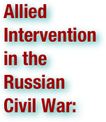
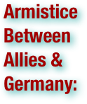
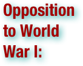
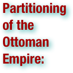
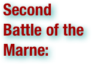
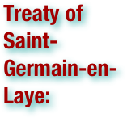
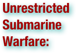

The Great War: Terms

The Italian campaign refers to a series of battles fought between the armies of Austria-Hungary and Italy, along with their allies, in northern Italy between 1915 and 1918. Italy hoped that by joining the countries of the Triple Entente against the Central Powers it would gain Cisalpine Tyrol (today's provinces of Trentino and South Tyrol), the Austrian Littoral, and northern Dalmatia. Although Italy had hoped to begin the war with a surprise offensive intended to move quickly and capture several Austrian cities, the war soon bogged down into trench warfare similar to the Western Front fought in France. (wikipedia.org. Accessed August 12-14, 2011.)

The Jones–Shafroth Act (1917) was a 1917 Act of the United States Congress by which Puerto Ricans were collectively made U.S. citizens, the people of Puerto Rico were empowered to have a popularly-elected Senate, established a bill of rights, and authorized the election of a Resident Commissioner to a four year term. Also known as the "Jones Act of Puerto Rico" or "Jones Law of Puerto Rico", it amended the "Organic Act of Puerto Rico" created by the Foraker Act of 1900. (This "Jones Act" applies only to Puerto Rico.) The act was signed into law by President Woodrow Wilson on March 2, 1917.

The July Crisis was a diplomatic crisis among the major powers of Europe in the summer of 1914 that led to the First World War. Immediately after Gavrilo Princip, a Bosnian Serb nationalist, assassinated Archduke Franz Ferdinand, heir to the Austro-Hungarian throne, in Sarajevo, a series of diplomatic maneuverings led to an ultimatum from Austria-Hungary to Serbia, and ultimately to war. This ultimatum was part of a coercive program meant to weaken the Kingdom of Serbia as a threat to Austria-Hungary's occupation of the northern Balkans which had a significant southern Slavic population, including a majority Serbian community in Bosnia. This was supposed to be achieved either through diplomacy or by a localized war if the ultimatum were rejected. Austria-Hungary preferred war, and to ensure war the terms of the ultimatum were so harsh that they were certain to be rejected. One month after the assassination of Franz Ferdinand, Austria-Hungary declared war on Serbia, thus initiating the First World War. (wikipedia.org. Accessed August 12-14, 2011.)

The League of Nations (LON) was an intergovernmental organization founded as a result of the Paris Peace Conference that ended World War I, and was the precursor to the United Nations. The League was the first permanent international security organization whose principal mission was to maintain world peace. At its greatest extent from 28 September 1934 to 23 February 1935, it had 58 members. The League's primary goals, as stated in its Covenant, included preventing war through collective security, disarmament, and settling international disputes through negotiation and arbitration. Other issues in this and related treaties included labor conditions, just treatment of native inhabitants, trafficking in persons and drugs, arms trade, global health, prisoners of war, and protection of minorities in Europe. (wikipedia.org. Accessed August 12-14, 2011.)

The "Lost Generation" is a term used to refer to the generation, actually an age cohort, that came of age during World War I. The term was popularized by Ernest Hemingway who used it as one of two contrasting epigraphs for his novel, The Sun Also Rises. In that volume Hemingway credits the phrase to Gertrude Stein, who was then his mentor and patron. In A Moveable Feast,which was published after Hemingway and Stein had a famous feud and fallen apart, and indeed after they were both dead, Hemingway reveals that the phrase was actually originated by the garage owner who serviced Stein's car. When a young mechanic failed to repair the car in a way satisfactory to Stein, the owner shouted at her, "You are all a generation perdue." Stein, in telling Hemingway the story, added, "That is what you are. That's what you all are... All of you young people who served in the war. You are a lost generation." The term, therefore, does not refer to all of the expatriate artists who lived in Paris after World War I. It clearly, as is seen from the original quote as reported by Hemingway, refers to his generation, those who were members of the age classes called to duty in the "Great War." This generation included distinguished artists such as Ernest Hemingway, F. Scott Fitzgerald, T.S. Eliot, John Dos Passos, Waldo Peirce, Alan Seeger, and, Erich Maria Remarque. It has alternately been used to describe the generation which participated in the Cultural Revolution in China. (wikipedia.org. Accessed August 12-14, 2011.)


RMS Lusitania was a British ocean liner designed by Leonard Peskett and built by John Brown and Company of Clydebank, Scotland. The ship entered passenger service with the Cunard Line on 26 August 1907. The ship was named after the ancient Roman province of Lusitania, which is part of present day Portugal. During the First World War, as Germany waged submarine warfare against Britain, the ship was identified and torpedoed by the German U-boat U-20 on 7 May 1915 and sank in eighteen minutes. The vessel went down eleven miles (18 km) off the Old Head of Kinsale, Ireland, killing 1,198 of the 1,959 people aboard, leaving 761 survivors. The sinking turned public opinion in many countries against Germany, contributed to the American entry into World War I and became an iconic symbol in military recruiting campaigns of why the war was being fought. (wikipedia.org. Accessed August 12-14, 2011.)
.pdf (. . . )


A species of strategic bombing, the aerial bombing of cities began in 1915 during World War I, grew to a vast scale in World War II, and continues to the present day. The development of aerial bombardment marked an increased capacity of armed forces to deliver explosive weapons in populated areas and, as such, has been controversial. A number of multilateral efforts have been made to restrict the use of aerial bombardment so as to protect civilian populations. (wikipedia.org. Accessed August 12-14, 2011.)

The African Theatre of World War I comprises geographically distinct campaigns around the German colonies of Kamerun, the Volta Region of Ghana, Togo, South-West Africa, and German East Africa. . . The British Empire, with near total command of the world's oceans, had the power and resources to conquer the German colonies when the Great War started. Most German colonies in Africa had been recently acquired and were not well defended, with the notable exception of German East Africa. They were also surrounded on all land sides by African colonies belonging mostly to their enemies, the United Kingdom, France, Belgium and, later in the war, Portugal. (wikipedia.org. Accessed August 12-14, 2011.)


All Quiet on the Western Front is a novel by Erich Maria Remarque, a German veteran of World War I. The book describes the German soldiers' extreme physical and mental stress during the war, and the detachment from civilian life felt by many of these soldiers upon returning home from the front. The novel was first published in November and December 1928 in the German newspaper Vossische Zeitung and in book form in late January 1929. The book and its sequel, The Road Back, were among the books banned and burned in Nazi Germany. It sold 2.5 million copies in twenty-five languages in its first eighteen months in print. (wikipedia.org. Accessed August 12-14, 2011.)


The Allied intervention was a multi-national military expedition launched in 1918 during World War I which continued into the Russian Civil War. Its operations included forces from 14 nations and were conducted over a vast territory. The initial stated goals were to rescue the Czechoslovak Legion, secure supplies of munitions and armaments in Russian ports, and re-establish the Eastern front. After winning the war in Europe, the Allied powers militarily backed the pro-Tsarist, anti-Bolshevik White forces in Russia. Allied efforts were hampered by divided objectives, lack of an overarching strategy, and a lack of home front public support. These factors, together with the evacuation of the Czechoslovak Legion and the deteriorating situation compelled the Allies to withdraw from North Russia and Siberia in 1920, though Japanese forces occupied parts of Siberia until 1922, and the northern half of Sakhalin until 1925. With the end of Allied support, the Red Army was able to inflict defeats on the remaining White government forces, leading to their eventual collapse. During the Allied intervention, the presence of foreign troops was effectively used for propaganda by the Bolsheviks who eventually established the Soviet Union. (wikipedia.org. Accessed August 12-14, 2011.)

The Entente Powers were the countries at war with the Central Powers during World War I. The key members of the Triple Entente were the United Kingdom, France, and the Russian Empire. Belgium,Serbia, Italy, Montenegro, Japan, Greece and Romania were minor members of the Entente. The United States declared war on Germany on the grounds that Germany violated US neutrality by attacking international shipping and because of the Zimmermann Telegram that was sent to Mexico. The U.S. entered the war as an "associated power", rather than a formal ally of France and Great Britain, in order to avoid "foreign entanglements". Although the Ottoman Empire severed relations with the United States, it did not declare war. Although the Dominions and Crown Colonies of the British Empire made significant contributions to the Allied war effort, they did not have independent foreign policies during World War I. Operational control of British Empire forces was in the hands of the five-member British War Cabinet (BWC). However, the Dominion governments controlled recruiting, and did remove personnel from front-line duties as they saw fit. From early 1917 the BWC was superseded by the Imperial War Cabinet, which had Dominion representation. (wikipedia.org. Accessed August 12-14, 2011.)


The Imperial Territory of Alsace-Lorraine was a territory created by the German Empire in 1871 after it annexed most of Alsace and the Moselle region of Lorraine following its victory in the Franco-Prussian War. . . French troops entered Alsace-Lorraine in November 1918 at the end of the World War I; the territory reverted to France at the Treaty of Versailles of 1919. The area was de facto annexed by Nazi Germany in 1940 (although no official de jure annexation took place). It reverted to France in 1944-1945 at the end of World War II with the defeat of Germany and it has remained a part of France since. (wikipedia.org. Accessed August 12-14, 2011.)

American entry into World War I came in April 1917, after 2½ years of efforts by President Woodrow Wilson to keep the United States neutral. Americans had no idea that a war was approaching in 1914. Over 100,000 were caught unaware when the war started, having traveled to Europe for tourism, business or to visit relatives. Their repatriation was handled by Herbert Hoover, an American private citizen based in London. The United States government, under the firm control of President Woodrow Wilson, called for neutrality "in thought and deed." Apart from an Anglophile element supporting the United Kingdom, public opinion went along with neutrality at first. Germany increasingly was seen as the villain after stories of atrocities in Belgium in 1914, the sinking of the Lusitania, an unarmed passenger liner in 1915, and its decision to attack all American ships in the North Atlantic in 1917. Wilson made all the key decisions and kept the economy on a peacetime basis, while allowing large-scale loans to Britain and France. To preclude making any military threat Wilson made no preparations for war and kept the army on its small peacetime basis despite increasing demands for preparedness. Finally, he called for a war to end all wars and make the world safe for democracy, and the U.S. entered the conflict in April 1917. (wikipedia.org. Accessed August 12-14, 2011.)

The American Expeditionary Forces or AEF were the United States Armed Forces sent to Europe in World War I. During the United States campaigns in World War I the AEF fought in France alongside British and French allied forces in the last year of the war, against Imperial German forces. The AEF helped the French Army on the Western Front during the Aisne Offensive (at Château-Thierry and Belleau Wood) in June 1918, and fought its major actions in the Saint-Mihiel and Meuse-Argonne Offensives in late 1918. (wikipedia.org. Accessed August 12-14, 2011.)

The term pogrom as a reference to large-scale, targeted, and repeated antisemitic rioting saw its first use in the 19th century. . . Many pogroms accompanied the post-1917 period of the Russian Civil War: an estimated 70,000 to 250,000 civilian Jews were killed throughout the formerRussian Empire; the number of Jewish orphans exceeded 300,000. In his book 200 Years Together, Aleksandr Solzhenitsyn provides these numbers from Nahum Gergel's 1951 study of the pogroms in Ukraine: out of an estimated 1,236 incidents of anti-Jewish violence, 887 mass pogroms occurred, the remainder being classified as "excesses" not assuming mass proportions. Of these incidents, about 40% were perpetrated by the Ukrainian forces led by Symon Petliura, 25% by the Ukrainian Green Army and various Ukrainian nationalist gangs, 17% by the White Army, especially the forces of Anton Denikin. A further 8.5% of Gergel's total figure is attributed to pogroms carried out by soldiers assigned to the Red Army - although the Red Army pogroms were not sanctioned by the Red Army leadership, and where Red Army troops had perpetrated pogroms, the Bolshevik high command subsequently disarmed entire regiments and individual pogromists were court-martialed and executed to deter further outbreaks. (wikipedia.org. Accessed August 12-14, 2011.)

The Arab Revolt (1916–1918) was initiated by the Sherif Hussein bin Ali with the aim of securing independence from the ruling Ottoman Turks and creating a single unified Arab state spanning from Aleppo in Syria to Aden in Yemen. (wikipedia.org. Accessed August 12-14, 2011.)

The Armenian Genocide—also known as the Armenian Holocaust, the Armenian Massacres and, by Armenians, as the Great Crime—refers to the deliberate and systematic destruction of theArmenian population of the Ottoman Empire during and just after World War I. It was implemented through wholesale massacres and deportations, with the deportations consisting of forced marches under conditions designed to lead to the death of the deportees. The total number of resulting Armenian deaths is generally held to have been between 1 million and 1.5 million. Other ethnic groups were similarly attacked by the Ottoman Empire during this period, including Assyrians and Greeks, and some scholars consider those events to be part of the same policy of extermination. It is widely acknowledged to have been one of the first modern genocides, as scholars point to the systematic, organized manner in which the killings were carried out to eliminate the Armenians, and it is the second most-studied case of genocide after the Holocaust. The word genocide was coined in order to describe these events. The starting date of the genocide is conventionally held to be April 24, 1915, the day that Ottoman authorities arrested some 250 Armenian intellectuals and community leaders in Constantinople. Thereafter, the Ottoman military uprooted Armenians from their homes and forced them to march for hundreds of miles, depriving them of food and water, to the desert of what is now Syria. Massacres were indiscriminate of age or gender, with rape and other sexual abuse commonplace. The majority of Armenian diaspora communities were founded as a result of the Armenian genocide. The Republic of Turkey, one of the successor states of the Ottoman Empire, denies the word genocide is an accurate description of the events (see Denial of the Armenian Genocide). In recent years, it has faced repeated calls to accept the events as genocide. To date, twenty countries have officially recognized the events of the period as genocide, and most genocide scholars and historians accept this view. (wikipedia.org. Accessed August 12-14, 2011.)


The armistice between the Allies and Germany was an agreement that ended the fighting in the First World War. It was signed in a railway carriage in Compiègne Forest on 11 November 1918, and marked a victory for the Allies and a complete defeat for Germany, although not technically a surrender. The Germans were responding to the policies proposed by American President Woodrow Wilson in his Fourteen Points. The actual terms, largely written by French Marshal Ferdinand Foch, included the cessation of hostilities, the withdrawal of German troops to behind their own borders, the preservation of infrastructure, the exchange of prisoners, a promise of reparations, the disposition of German warships and submarines, and conditions for prolonging or terminating the armistice. . . the cessation of hostilities on the Western Front . . . took effect at eleven o'clock in the morning—the "eleventh hour of the eleventh day of the eleventh month" of 1918. While this official date to mark the end of the war reflects the cease fire on the Western Front, hostilities continued in other regions, especially across the former Russian Empire and in parts of the old Ottoman Empire. (wikipedia.org. Accessed August 12-14, 2011.)

The Armistice of Moudros, concluded on 30 October 1918, ended the hostilities in the Middle Eastern theatre between the Ottoman Empire and the Allies of World War I. It was signed by the Minister of Marine Affairs Rauf Bey and the British Admiral Somerset Arthur Gough-Calthorpe, on board HMS Agamemnon in Moudros harbor on the Greek island of Lemnos. The Ottomans surrendered their remaining garrisons outside Anatolia, granted the Allies the right to occupy forts controlling the Straits of the Dardanelles and the Bosporus; and the right to occupy "in case of disorder" any territory in case of a threat to security. The Ottoman army was demobilized, and ports, railways, and other strategic points were made available for use by the Allies. In the Caucasus, Turkey had to retreat to within its pre-war borders. The armistice was followed with occupation of Constantinople and subsequent partitioning of the Ottoman Empire. The Treaty of Sèvres (10 August 1920) followed the armistice, but this treaty was not enacted due to the outbreak of the Turkish War of Independence. (wikipedia.org. Accessed August 12-14, 2011.)

The Armistice of Villa Giusti ended warfare between Italy and Austria-Hungary on the Italian Front during World War I. The armistice was signed on November 3, 1918 in the Villa Giusti and was to take effect 24 hours later. (wikipedia.org. Accessed August 12-14, 2011.)

Armored warfare or tank warfare is the use of armored fighting vehicles in modern warfare. It is a major component of modern methods of war. The premise of armored warfare rests on the ability of troops to penetrate conventional defensive lines through use of maneuver by armored units. . . The doctrine of armored warfare was developed to break the static nature of World War I trench warfare on the western front, and return to the 19th century school of thought that advocated maneuver and "decisive battle" outcomes in military strategy. (wikipedia.org. Accessed August 12-14, 2011.)


The term arms race, in its original usage, describes a competition between two or more parties for the best armed forces. Each party competes to produce larger numbers of weapons, greater armies, or superior military technology in a technological escalation. . . From 1891 to 1919, an arms race between several European countries, including Germany, France, Russia, and others took place. Specifically, Germany's envy of Britain's superior navy in the run up to World War I resulted in a costly building competition of Dreadnought-class ships. This tense arms race lasted until June 1914, when, after two antagonistic power blocs were formed because of the rivalry, the World War broke out. After the war, a new arms race developed among the victorious Allies. The Washington Naval Treaty was only partly able to put an end to the race. Prior to WWI, a dreadnought arms race also took place in South America. (wikipedia.org. Accessed August 12-14, 2011.)

Originally applied to any group of infantry primarily armed with projectile weapons, artillery has over time become limited in meaning to refer only to those engines of war that operate by projection of munitions far beyond the range of effect of personal weapons. These engines comprise specialized devices which use some form of stored energy to operate, whether mechanical, chemical, or electromagnetic. Originally designed to breach fortifications, they have evolved from nearly static installations intended to reduce a single obstacle to highly mobile weapons of great flexibility in which now reposes the greater portion of a modern army's offensive capabilities. In common speech the word artillery is often used to refer to individual devices, together with their accessories and fittings, although these assemblages are more properly referred to as equipments. By association, artillery may also refer to the arm of service that customarily operates such engines. . . Artillery is by far the deadliest and most effective form of land-based armament; in the Napoleonic Wars, World War I and World War II the vast majority of combat deaths were caused by artillery. (wikipedia.org. Accessed August 12-14, 2011.)

Attrition warfare is a military strategy in which a belligerent side attempts to win a war by wearing down its enemy to the point of collapse through continuous losses in personnel and matériel. The war will usually be won by the side with greater such resources. A good example of this was during World War I when the Allies wore down the Central Powers to the point of capitulation. (wikipedia.org. Accessed August 12-14, 2011.)

The Asian and Pacific Theatre of World War I was a largely bloodless conquest of German colonial possession in the Pacific Ocean and China. The most significant military action was the careful and well-executed Siege of Tsingtao in what is now China, but smaller actions were also fought at Bita Paka andToma in German New Guinea. All other German and Austrian possessions in Asia and the Pacific fell without bloodshed. Naval warfare was common; all of the colonial powers had naval squadrons stationed in the Indian or Pacific Oceans. These fleets operated by supporting the invasions of German held territories and by destroying the East Asia Squadron. (wikipedia.org. Accessed August 12-14, 2011.)

On 28 June 1914, Archduke Franz Ferdinand of Austria, heir apparent to the Austro-Hungarian throne, and his wife,Sophie, Duchess of Hohenberg, were shot dead in Sarajevo, by Gavrilo Princip, one of a group of six Bosnian Serb assassins coordinated by Danilo Ilić. The political objective of the assassination was to break off Austria-Hungary's south-Slav provinces so they could be combined into a Greater Serbia or a Yugoslavia. The assassins' motives were consistent with the movement that later became known as Young Bosnia. Serbian military officers stood behind the attack. At the top of these Serbian military conspirators was Chief of Serbian Military Intelligence Dragutin Dimitrijević, his right hand man Major Vojislav Tankosić, and Masterspy Rade Malobabić. Major Tankosić armed (with bombs and pistols) and trained the assassins, and the assassins were given access to the same clandestine tunnel of safe-houses and agents that Rade Malobabić used for the infiltration of weapons and operatives into Austria-Hungary. The assassins, the key members of the clandestine tunnel, and the key Serbian military conspirators who were still alive were arrested, tried, convicted and punished. Those who were arrested in Bosnia were tried in Sarajevo in October 1914. The other conspirators were arrested and tried before a Serbian kangaroo court on the French-controlled Salonika Front in 1916-1917 on unrelated false charges; Serbia executed three of the top military conspirators. Much of what is known about the assassinations comes from these two trials and related records. Assignment of responsibility for the bombing and murders of 28 June is highly controversial because the attack led to the outbreak of World War I one month later. (wikipedia.org. Accessed August 12-14, 2011.)

The Assyrian Genocide refers to the mass slaughter of the Assyrian/Chaldean/Syriac population of the Ottoman Empire during the First World War. The Assyrian population of northern Mesopotamia (the Tur Abdin, Hakkari, Van, Siirt regions of present-day southeastern Turkey and the Urmia region of northwestern Iran) was forcibly relocated and massacred by Ottoman (Turkish) andKurdish forces between 1914 and 1920. Estimates on the overall death toll have varied. Contemporary reports placed the figure at 270,000. More recent estimates have revised that figure to as between 500,000 and 750,000. The Assyrian genocide took place in the same context as the Armenian and Pontic Greek genocides. In these events, close to three million Christians of Syriac, Armenian or Greek Orthodox denomination were murdered by theYoung Turks regime. Since the "Assyrian genocide" took place within the context of the much more widespread Armenian genocide, historical scholarship treating it as a separate event is scarce. In 2007, the International Association of Genocide Scholars reached a consensus that "the Ottoman campaign against Christian minorities of the Empire between 1914 and 1923 constituted a genocide against Armenians, Assyrians, and Pontian and Anatolian Greeks." The President of Genocide Watch endorsed the "repudiation by the world's leading genocide scholars of the Turkish government's ninety-year denial of the Ottoman Empire's genocides against its Christian populations, including Assyrians, Greeks, and Armenians." (wikipedia.org. Accessed August 12-14, 2011.)

The Australian and New Zealand Army Corps (ANZAC) was a First World War army corps of theMediterranean Expeditionary Force that was formed in Egypt in 1915 and operated during the Battle of Gallipoli. General William Birdwood commanded the corps, which comprised troops from the First Australian Imperial Force and 1st New Zealand Expeditionary Force. The corps was disbanded in 1916 following the Allied evacuation of the Gallipoli peninsula and the formation of I Anzac Corps and II Anzac Corps. (wikipedia.org. Accessed August 12-14, 2011.)

Austria-Hungary (also known as the Austro-Hungarian Empire, Austro-Hungarian monarchy or k.u.k.Monarchy), more formally known as the Kingdoms and Lands Represented in the Imperial Council and the Lands of the Holy Hungarian Crown of Saint Stephen, was a constitutional monarchic union between the crowns of the Austrian Empire and the Kingdom of Hungary in Central Europe. The union was a result of the Austro-Hungarian Compromise of 1867, under which the House of Habsburg agreed to share power with the separate Hungarian government, dividing the territory of the former Austrian Empire between them. The Austrian and the Hungarian lands became independent entities enjoying equal status. Austria-Hungary was a multinational realm and one of the world's great powers at the time. The dual monarchy had existed for 51 years until it dissolved on 31 October 1918 before a military defeat on the Italian front of the First World War. The realm comprised modern-day Austria, Hungary, Bosnia and Herzegovina, Croatia, the Czech Republic,Slovakia, Slovenia, and parts of Italy, Montenegro, Poland, Romania, Serbia, and Ukraine. (wikipedia.org. Accessed August 12-14, 2011.)

In international relations, a balance of power exists when there is parity or stability between competing forces. The concept "describes a state of affairs in the international system and explains the behavior of states in that system" (Fry, Goldstein & Langhorn, 2004). As a term in international law for a 'just equilibrium' between the members of the family of nations, it expresses the doctrine intended to prevent any one nation from becoming sufficiently strong so as to enable it to enforce its will upon the rest. (wikipedia.org. Accessed August 12-14, 2011.)

The Balfour Declaration of 1917 (dated 2 November 1917) was a letter from the British Foreign Secretary Arthur James Balfour to Baron Rothschild, a leader of the British Jewish community, for transmission to the Zionist Federation of Great Britain and Ireland. "His Majesty's government view with favor the establishment in Palestine of a national home for the Jewish people, and will use their best endeavors to facilitate the achievement of this object, it being clearly understood that nothing shall be done which may prejudice the civil and religious rights of existing non-Jewish communities in Palestine, or the rights and political status enjoyed by Jews in any other country." The statement was issued through the efforts of Chaim Weizmann and Nahum Sokolow, the principal Zionist leaders based in London; as they had asked for the reconstitution of Palestine as “the” Jewish national home, the declaration fell short of Zionist expectations. The "Balfour Declaration" was later incorporated into the Sèvres peace treaty with Turkey and the Mandate for Palestine. (wikipedia.org. Accessed August 12-14, 2011.)

Barbed wire . . . is a type of fencing wire constructed with sharp edges or points arranged at intervals along the strand(s). It is used to construct inexpensive fences and is used atop walls surrounding secured property. It is also a major feature of the fortifications in trench warfare (as a wire obstacle). A person or animal trying to pass through or over barbed wire will suffer discomfort and possibly injury. . . . barbed wire was used extensively by all participating combatants in World War I to prevent movement, with deadly consequences. Barbed wire entanglements were placed in front of trenches to prevent direct charges on men below, increasingly leading to greater use of more advanced weapons such as high powered machine guns and grenades. A feature of these entanglements was that the barbs were much closer together, often forming a continuous sequence. Barbed wire could be exposed to heavy bombardments because it could be easily replaced, and its structure included so much open space that machine guns rarely destroyed enough of it to defeat its purpose. However barbed wire was conquered by the Tank in 1916, as shown by the Allied breakthrough at Amiens through German lines on August 8, 1918. (wikipedia.org. Accessed August 12-14, 2011.)

A barrage is a line or barrier of exploding artillery shells, created by the co-ordinated aiming of a large number of guns firing continuously. Its purpose is to deny or hamper enemy passage through the line of the barrage, to attack a linear position such as a line of trenches or (as a creeping or rolling barrage) to neutralize the enemy in the path of an advance by friendly troops. It contrasts with a concentration, in which all the guns aim at the same small area. The barrage was developed in World War I, and by late 1916 the creeping barrage was the standard means of deploying artillery to support an infantry attack, with the infantry following the advancing barrage as closely as possible. Its employment in this way recognized the importance of artillery fire in neutralizing, rather than destroying, the enemy. It was found that a creeping barrage immediately followed by the infantry assault could be far more effective than weeks of preliminary bombardment. Barrages remained in use in World War II and later, but only as one of a variety of artillery tactics made possible by improvements in predicted fire, target location and communications. (wikipedia.org. Accessed August 12-14, 2011.)

The Basmachi movement or Basmachi Revolt was an uprising against Russian Imperial and Soviet rule by the Muslim, largely Turkic peoples of Central Asia. The movement's roots lay in the 1916 violence that erupted over conscription of Muslims for service in World War I. In the months following the October 1917 Revolution, renewed violence developed into a major uprising centered in the Ferghana Valley, soon spreading across all of Soviet Turkestan. Guerrilla and conventional warfare lasted for years in various regions, and the violence was both anti-Soviet and anti-Russian. After major Red Army campaigns and concessions regarding economic and Islamic practices in the mid 1920s, the military fortunes and popular support of the Basmachi declined. Although resistance flared up again in response to collectivization, the Sovietization of Central Asia proceeded apace and the struggle ended. (wikipedia.org. Accessed August 12-14, 2011.)

The Battle of Amiens (also known as the Third Battle of Picardy), which began on 8 August 1918, was the opening phase of the Allied offensive later known as the Hundred Days Offensive that ultimately led to the end of the First World War. Allied forces advanced over seven miles on the first day, one of the greatest advances of the war, with Henry Rawlinson's British Fourth Army playing the decisive role. The battle is also notable for its effects on both sides' morale and the large number of surrendering German forces. This led Erich Ludendorff to describe the first day of the battle as "the black day of the German Army." Amiens was one of the first major battles involving armored warfare and marked the end of trench warfare on the Western Front; fighting becoming mobile once again until the armistice was signed on 11 November 1918. (wikipedia.org. Accessed August 12-14, 2011.)

The Battle of Bucharest, also known as the Argeş-Neajlov Defensive Operation in Romania, was an important battle of the Romanian Campaign in World War I, in which the Central Powers occupied the Romanian capital and forced the Romanian Government, as well as the remnants of the Romanian Army to retreat to Moldova and re-establish its capital at Iaşi. The sheer number of troops involved, as well as the large area of operations, make it one of the most complex battles fought on Romanian soil during the war. Bucharest was eventually liberated after the Central Powers' surrender in 1918. (wikipedia.org. Accessed August 12-14, 2011.)

The Battle of Caporetto (also known as the Twelfth Battle of the Isonzo or the Battle of Karfreit as it was known by the Central Powers), took place from 24 October to 19 November 1917, near the town of Kobarid (now in Slovenia), on the Austro-Italian front of World War I. The battle was named after the Italian name of the town of Kobarid (known as Karfreit in German). Austro-Hungarian forces, reinforced by German units, were able to break into the Italian front line and rout the Italian army, which had practically no mobile reserves. The battle was a demonstration of the effectiveness of the use of stormtroopers and the infiltration tactics developed in part by Oskar von Hutier. The use of poison gas by the Germans played a key role in the collapse of the Italian Second Army. (wikipedia.org. Accessed August 12-14, 2011.)

The Battle of Dobro Pole was a World War I battle, fought on 15 September 1918. The battle resulted in a decisive Entente victory, with a defeated Bulgaria left to sign an armistice, which removed it from World War I. The battle was fought at Dobro Pole, in present day Republic of Macedonia, which was claimed by Bulgaria and had been under Bulgarian occupation since 1915. (wikipedia.org. Accessed August 12-14, 2011.)

The Battle of the Frontiers was a series of battles fought along the eastern frontier of France and in southern Belgium shortly after the outbreak of World War I. The battles represented a collision between the military strategies of the French Plan XVII and the German Schlieffen Plan. The British Expeditionary Force (BEF) fought a relatively minor battle at Mons, which, by virtue of its position facing the critical right wing of the invading German army, had a significance that far exceeded the number of men engaged or casualties inflicted. The defeat of the French offensive in the Battle of the Ardennes led to a general retreat to the Marne River where the French and British forces regrouped for the defense of Paris. (wikipedia.org. Accessed August 12-14, 2011.)

The Battle of Jutland was a naval battle between the British Royal Navy's Grand Fleet and the Imperial German Navy's High Seas Fleet during the First World War. It was fought on 31 May and 1 June 1916 in the North Sea near Jutland, Denmark. The battle was the largest naval battle and the only full-scale clash of battleships in the war. It was also only the third major fleet action between steel battleships following the battles of the Yellow Sea and Tsushima during the Russo-Japanese War. . . Both sides claimed victory. The British lost more ships and twice as many sailors, and the British press criticised the Grand Fleet's failure to force a decisive outcome, but Scheer's plan of destroying a substantial portion of the British fleet also failed. The Germans continued to pose a threat, requiring the British to keep their battleships concentrated in the North Sea, but the battle confirmed the German policy of avoiding all fleet-to-fleet contact, and instead, the German Navy turned its efforts and resources to unrestricted submarine warfare and the destruction of Allied and neutral shipping. Subsequent reviews commissioned by the Royal Navy generated strong disagreement between supporters of Jellicoe and Beatty, and the two admirals' performance in the battle; this debate continues today. (wikipedia.org. Accessed August 12-14, 2011.)

The Battle of Mecca occurred in the Muslim holy city of Mecca in June and July 1916. On June 10, the Sharif of Mecca, Hussein bin Ali, the leader of the Binu Hashim clan started a revolt against the Ottoman Caliphate from this city. The Battle of Mecca was part of the Arab Revolt of World War I. . . It was the beginning of the end of the Ottoman Empire and it was the beginning of a Hashemite kingdom whose capital was Mecca. Gradually it expanded northward. This battle left deep scars on the Middle East. Arab states came under strong European influence. The Ottoman caliphate ended and Palestine came under British rule, leading to the eventual existence of the state of Israel. The Sharif of Mecca was himself deposed by the rival Saudis and his dream of an Arabian state stretching from Yemen to Syria remained a dream. (wikipedia.org. Accessed August 12-14, 2011.)

The Battle of Megiddo, from 19 September to 1 October 1918, and its subsequent exploitation, was the culminating victory in British General Edmund Allenby's conquest of Palestine during World War I. British Empire forces made a massive push into the Jezreel Valley from the west, through the Carmel Ridge, then engulfed the Ottoman forces in the valley and on the River Jordan. When he was made a viscount, Allenby took the name of this battle as his title, becoming the First Viscount Allenby of Megiddo. Allenby's operations succeeded at very little cost, in contrast to many offensives during the First World War, and were widely praised. The British made significant use of both cavalry and aircraft, a historically rare combination. (wikipedia.org. Accessed August 12-14, 2011.)

The Battle of Passchendaele was one of the major battles of the First World War, taking place between July and November 1917. In a series of operations, Entente troops under British command attacked the Imperial German Army. The battle was fought for control of the village of Passchendaele (modern Passendale) near the town of Ypres in West Flanders, Belgium. The objective of the offensive was to achieve a breakthrough, outflanking the German Army’s defences, and forcing Germany to withdraw from the Channel Ports. The offensive also served to distract the German army from the French in the Aisne, who were suffering from widespread mutiny. . . Casualty figures are in dispute. (wikipedia.org. Accessed August 12-14, 2011.)

The Battle of Sardarabad or Battle of Sardarapat was a battle of the Caucasus Campaign of World War I that took place near Sardarabad (modern-day Armavir), Armenia from May 21-29, 1918. Sardarabad was only 40 kilometers west of the city of Yerevan and the battle is currently seen as not only stopping the Ottoman advance into the rest of Armenia but also preventing the complete destruction of the Armenian nation. In the words of historian and researcher Christopher J. Walker, had the Armenians lost this battle, "it is perfectly possible that the word Armenia would have henceforth denoted only an antique geographical term." (wikipedia.org. Accessed August 12-14, 2011.)

The Battle of the Somme, also known as the Somme Offensive, took place during the First World War between 1 July and 18 November 1916 in the Somme department of France, on both banks of the river of the same name. The battle consisted of an offensive by the British and French armies against the German Army, which, since invading France in August 1914, had occupied large areas of that country. The Battle of the Somme was one of the largest battles of the First World War; by the time fighting had petered out in late autumn 1916 the forces involved had suffered more than 1 million casualties, making it one of the bloodiest military operations ever recorded. (wikipedia.org. Accessed August 12-14, 2011.)

The Battle of Verdun was one of the major battles during the First World War on the Western Front. It was fought between the German and French armies, from 21 February-18 December 1916, on hilly terrain north of the city of Verdun-sur-Meuse in north-eastern France. As again pointed out by French Verdun scholar and historian Alain Denizot in "Verdun, 1914-1918" (1996) the Battle of Verdun ended as a French tactical victory. However, it can also be considered a costly strategic stalemate. The German High Command had failed to achieve its two objectives: 1) to capture the city of Verdun and 2) to inflict a much higher casualty count on its French adversary. By the end of the battle (December 1916) the French Second Army had rolled back the German forces around Verdun, but not quite to their initial positions of February 1916. Verdun resulted in 306,000 battlefield deaths (163,000 French and 143,000 German combatants) plus at least half a million wounded, an average of 30,000 deaths for each of the ten months of the battle. It was the longest and one of the most devastating battles in the First World War and the history of warfare. Verdun was primarily an artillery battle: a total of about 40 million artillery shells were exchanged, leaving behind millions of overlapping shell craters that are still partly visible. In both France and Germany, Verdun has come to represent the horrors of war, like the Battle of the Somme in the British consciousness. The renowned British military historian Major General Julian Thompson has referred to Verdun as "France's Stalingrad". (wikipedia.org. Accessed August 12-14, 2011.)

The Battle of Vittorio Veneto was fought between 24 October and 3 November 1918, near Vittorio Veneto, during the Italian Campaign of World War I. The Italian victory marked the end of the war on the Italian Front, secured the dissolution of the Austro-Hungarian Empire and was chiefly instrumental in ending the First World War less than two weeks later. Some Italians see Vittorio Veneto as the final culmination of the Risorgimento nationalist movement, in which Italy was unified. (wikipedia.org. Accessed August 12-14, 2011.)

The Belle Époque . . . was a period in European social history that began during the late 19th century and lasted until World War I. Occurring during the era of the French Third Republic and the German Empire, it was a period characterized by optimism and new technological and medical discoveries. The Belle Époque was named in retrospect, when it began to be considered a "golden age" when compared to the horrors of World War I. In the newly rich United States, emerging from the Panic of 1873, the comparable epoch was dubbed the Gilded Age. In the United Kingdom, the Belle Époque overlapped with the late Victorian era and the Edwardian era. (wikipedia.org. Accessed August 12-14, 2011.)

The Black Tom explosion on July 30, 1916 in Jersey City, New Jersey was an act of sabotage on American ammunition supplies by German agents to prevent the materiel from being used by the Allies in World War I. (wikipedia.org. Accessed August 12-14, 2011.)

The Blockade of Germany, or the Blockade of Europe, occurred from 1914-1919 and was a prolonged naval operation conducted by the Allied Powers during and after World War I in an effort to restrict the maritime supply of raw materials and foodstuffs to the Central Powers, which included Germany, Austria-Hungary and Turkey. It is considered one of the key elements in the eventual allied victory in the war. The blockade continued even after the Armistice of 11 November 1918, in order to force Germany to sign the controversial Treaty of Versailles in June 1919. The German Empire claimed that 763,000 German civilians died from starvation caused by the blockade during and after the War. Both the German Empire and Great Britain relied heavily on imports to feed their population and supply their war industry. Imports of foodstuffs and war materiel of all European belligerents came primarily from the Americas and had to be shipped across the Atlantic Ocean, thus Britain and Germany both aimed to blockade each other. The British had the Royal Navy which was superior in numbers and could operate throughout the British Empire, while the German Kaiserliche Marine surface fleet was mainly restricted to the German Bight, and used commerce raiders and unrestricted submarine warfare to operate elsewhere. (wikipedia.org. Accessed August 12-14, 2011.)

The Bosnian Crisis of 1908–1909, also known as the Annexation crisis, or the First Balkan Crisis, erupted into public view when on 6 October 1908, Austria-Hungary announced the annexation of Bosnia and Herzegovina. Russia, the Ottoman Empire, Britain, Italy, Serbia, Montenegro, Germany and France took an interest in these events. In April 1909 the Treaty of Berlin was amended to accept the new status quo bringing the crisis to an end. The crisis permanently damaged relations between Austria-Hungary on the one hand and Russia and Serbia on the other. The annexation and reactions to the annexation were contributing causes of World War I. (wikipedia.org. Accessed August 12-14, 2011.)

The British Empire comprised the dominions, colonies, protectorates, mandates, and other territories ruled or administered by the United Kingdom. It originated with the overseas colonies and trading posts established by England in the late 16th and early 17th centuries. At its height it was the largest empire in history and, for over a century, was the foremost global power. By 1922 the British Empire held sway over about 458 million people, one-quarter of the world's population at the time, and covered more than 33,700,000 km2 (13,012,000 sq mi), almost a quarter of the Earth's total land area. As a result, its political, linguistic and cultural legacy is widespread. At the peak of its power, it was often said that "the sun never sets on the British Empire" because its span across the globe ensured that the sun was always shining on at least one of its numerous territories. (wikipedia.org. Accessed August 12-14, 2011.)


The British Expeditionary Force or BEF was the force sent to the Western Front during World War I. . . The term "British Expeditionary Force" is often used to refer only to the forces present in France prior to the end of the First Battle of Ypres on 22 November 1914. By the end of 1914—after the battles of Mons, the Le Cateau, the Aisne and Ypres—the old regular British army had been wiped out, although it managed to stop the German advance. An alternative endpoint of the BEF was 26 December 1914, when it was divided into the First and Second Armies (a third, fourth and fifth being created later in the war). B.E.F. remained the official name of the British Army in France and Flanders throughout the First World War. (wikipedia.org. Accessed August 12-14, 2011.)

The Brusilov Offensive, also known as the June Advance, was the Russian Empire's greatest feat of arms during World War I, and among the most lethal battles in world history. Professor Graydon A. Tunstall of the University of South Florida called the Brusilov Offensive of 1916 the worst crisis of World War I for Austria-Hungary and the Triple Entente's greatest victory. It was a major offensive against the armies of the Central Powers on the Eastern Front, launched on June 4, 1916 and lasting until late September. It took place in what today is Ukraine, in the general vicinity of the towns of Lemberg, Kovel, and Lutsk. The offensive was named after the Russian commander in charge of the Southwestern Front, Aleksei Brusilov. Although the Brusilov Offensive was the greatest Russian feat of arms in the entire war, its cost had been high for Russia. More importantly, the Russian people saw it as just another military failure, and this certainly contributed to the revolution in 1917. (wikipedia.org. Accessed August 12-14, 2011.)

The total number of military and civilian casualties in World War I, was around 37.5 million. There were 16.5 million deaths and 21 million wounded making it the 6th deadliest conflict in human history. The total number of deaths includes 9.7 million military personnel and about 6.8 million civilians. The Entente Powers (also known as the Allies) lost about 5.7 million soldiers while the Central Powers lost about 4 million. Unlike most (if not all) conflicts that took place in the 19th century and before, the majority of military deaths in World War I were caused by combat as opposed to disease. Improvements in medicine as well as the increased lethality of military weaponry were both factors in this development. Nevertheless, disease (including the Spanish flu) still caused a significant proportion of military deaths for all belligerents. (wikipedia.org. Accessed August 12-14, 2011.)

The causes of World War I, which began in central Europe in July 1914, included many intertwined factors, such as the conflicts and hostility of the four decades leading up to the war. Militarism, alliances, imperialism, and nationalism played major roles in the conflict as well. However, the immediate origins of the war lay in the decisions taken by statesmen and generals during the July Crisis of 1914, casus belli for which was the assassination of Archduke Franz Ferdinand of Austria and his wife by Gavrilo Princip, an irredentist Serb. The crisis came after a long and difficult series of diplomatic clashes between the Great Powers (Italy, France, Germany, Great Britain, Austria-Hungarian Empire and Russia) over European and colonial issues in the decade before 1914 that had left tensions high. In turn these diplomatic clashes can be traced to changes in the balance of power in Europe since 1867. The more immediate cause for the war was tensions over territory in the Balkans. Austria-Hungary competed with Serbia and Russia for territory and influence in the region and they pulled the rest of the Great Powers into the conflict through their various alliances and treaties. The topic of the causes of World War I is one of the most studied in all of world history. Scholars have differed significantly in their interpretations of the event. (wikipedia.org. Accessed August 12-14, 2011.)

The Central Powers was one of the two sides that participated in World War I and was also known as the Triple Alliance, the other being the Triple Entente (Allied Powers). It was made up of the German Empire, the Austro-Hungarian Empire, the Ottoman Empire, and the Kingdom of Bulgaria. (wikipedia.org. Accessed August 12-14, 2011.)

The Hague Declaration of 1899 and the Hague Convention of 1907 forbade the use of "poison or poisonous weapons" in warfare, yet more than 124,000 tons of gas were produced by the end of World War I. The French were the first to use chemical weapons during the First World War, using tear gas. The German's first use of chemical weapons were shells containing xylyl bromide that were fired at the Russians near the town of Bolimów, Poland in January 1915. The first full-scale deployment of chemical warfare agents was during World War I, originating in the Second Battle of Ypres, April 22, 1915, when the Germans attacked French, Canadian and Algerian troops with chlorine gas. Deaths were light, though casualties relatively heavy. A total 50,965 tons of pulmonary, lachrymatory, and vesicant agents were deployed by both sides of the conflict, including chlorine, phosgene and mustard gas. Official figures declare about 1,176,500 non-fatal casualties and 85,000 fatalities directly caused by chemical warfare agents during the course of the war. To this day unexploded World War I-era chemical ammunition is still uncovered when the ground is dug in former battle or depot areas and continues to pose a threat to the civilian population in Belgium and France and less commonly in other countries. The French and Belgian governments have had to launch special programs for treating discovered ammunition. After the war, most of the unused German chemical warfare agents were dumped into the Baltic Sea, a common disposal method among all the participants in several bodies of water. Over time, the salt water causes the shell casings to corrode, and mustard gas occasionally leaks from these containers and washes onto shore as a wax-like solid resembling ambergris. Even in this solidified form, the agent is active enough to cause severe burns to anybody coming into contact with it. (wikipedia.org. Accessed August 12-14, 2011.)

The use of chemical weapons in World War I ranged from disabling chemicals, such as tear gas and the severe mustard gas, to lethal agents like phosgene and chlorine. This chemical warfare was a major component of the first global war and first total war of the 20th century. The killing capacity of gas, however, was limited – only four percent of combat deaths were caused by gas. Because it was possible to develop effective countermeasures against attacks, gas was unlike most other weapons of the period. In the later stages of the war, as the use of gas increased, its overall effectiveness diminished. This widespread use of these agents of chemical warfare, and wartime advances in the composition of high explosives, gave rise to an occasionally expressed view of World War I as "the chemists' war". (wikipedia.org. Accessed August 12-14, 2011.)


Combat stress reaction (CSR), in the past commonly known as shell shock or battle fatigue, is a military term used to categorize a range of behaviors resulting from the stress of battle which decrease the combatant's fighting efficiency. The most common symptoms are fatigue, slower reaction times, indecision, disconnection from one's surroundings, and inability to prioritize. Combat stress reaction is generally short-term and should not be confused with acute stress disorder, post-traumatic stress disorder, or other long-term disorders attributable to combat stress, although any of these may commence as a combat stress reaction. The ratio of stress casualties to battle casualties varies with the intensity of the fighting, but with intense fighting it can be as high as 1:1. In low-level conflicts it can drop to 1:10 (or less). In World War I, shell shock was considered a psychiatric illness resulting from injury to the nerves during combat. The horrors of trench warfare meant that about 10% of the fighting soldiers were killed (compared to 4.5% during World War II) and the total proportion of troops who became casualties (killed or wounded) was 56%. Whether a shell-shock sufferer was considered "wounded" or "sick" depended on the circumstances. The large proportion of World War I veterans in the European population meant that the symptoms were common to the culture. (wikipedia.org. Accessed August 12-14, 2011.)

A conscientious objector (CO) is an "individual [who has] claimed the right to refuse to perform military service" on the grounds of freedom of thought, conscience, or religion. (wikipedia.org. Accessed August 12-14, 2011.)

Conscription is the compulsory enrollment of people to some sort of national service, most often military service. . . The Conscription Crisis of 1917 was a political and military crisis in Canada during World War I. . . After the Battle of the Somme, Canada was in desperate need to replenish its supply of soldiers; however, there were very few volunteers to replace them. The recruiting effort in Quebec had failed, and Canada turned to its only unused option: conscription. Almost all French Canadians opposed conscription: they felt that they had no particular loyalty to either Britain or France. Led by Henri Bourassa, they felt their only loyalty was to Quebec. English Canadians generally supported the war effort as they felt stronger ties to the British Empire. The Conscription Crisis of 1917 caused a considerable rift along ethnic lines between Anglophones and Francophones. (wikipedia.org. Accessed August 12-14, 2011.)

The convoy—a group of merchantmen or troopships traveling together with a naval escort—was revived during World War I (1914–18), after having been discarded at the start of the Age of Steam. Although convoys were used by the Royal Navy in 1914 to escort troopships from the Dominions, and in 1915 by both it and the French Navy to cover their own troop movements for overseas service, they were not systematically employed by any belligerent navy until 1916. The Royal Navy was the major user and developer of the modern convoy system, and regular transoceanic convoying began in June 1917. They made heavy use of aircraft for escorts, especially in coastal waters, an obvious departure from the convoy practices of the Age of Sail. As historian Paul E. Fontenoy put it, "[t]he convoy system defeated the German submarine campaign." From June 1917 on, the Germans were unable to meet their set objective of sinking 600,000 long tons (610,000 t) of enemy shipping per month. In 1918, they were rarely able to sink more than 300,000 long tons (300,000 t). Between May 1917 and the end of the war on 11 November 1918, only 154 of 16,539 vessels convoyed across the Atlantic had been sunk, of which 16 were lost through the natural perils of sea travel and a further 36 because they were stragglers. (wikipedia.org. Accessed August 12-14, 2011.)

HMS Dreadnought was a battleship of the British Royal Navy that revolutionized naval power. Her entry into service in 1906 represented such a marked advance in naval technology that her name came to be associated with an entire generation of battleships, the "dreadnoughts", as well as the class of ships named after her, while the generation of ships she made obsolete became known as "pre-dreadnoughts". She was the sixth ship of that name in the Royal Navy. (wikipedia.org. Accessed August 12-14, 2011.)

The Dual Alliance was a defensive alliance between Germany and Austria-Hungary, which was created by treaty on October 7, 1879 as part of Bismarck's system of alliances to prevent/limit war. In it, Germany and Austria-Hungary pledged to aid one another in case of an attack by Russia. Also, each state promised benevolent neutrality to the other if one of them was attacked by another European power (generally taken to be France, especially after the Franco-Russian Alliance of 1894). (wikipedia.org. Accessed August 12-14, 2011.)

The Easter Rising was an insurrection staged in Ireland during Easter Week, 1916. The Rising was mounted by Irish republicans with the aims of ending British rule in Ireland and establishing the Irish Republic. It was the most significant uprising in Ireland since the rebellion of 1798. (wikipedia.org. Accessed August 12-14, 2011.)

The Eastern Front used to be a theatre of war during World War I in Central and, primarily, Eastern Europe. The term is in contrast to the Western Front. Despite the geographical separation, the events in the two theaters strongly influenced each other. In Russian sources, the war was sometimes called the Second Fatherland War. (wikipedia.org. Accessed August 12-14, 2011.)

The Entente cordiale is a series of agreements signed on 8 April 1904 between the United Kingdom and the French Republic. Beyond the immediate concerns of colonial expansion addressed by the agreement, the signing of the Entente cordiale marked the end of almost a millennium of intermittent conflict between the two nations and their predecessor states, and the formalization of the peaceful co-existence that had existed since the end of the Napoleonic Wars. The Entente cordiale, along with the Anglo-Russian Entente and the Franco-Russian Alliance, later became part of the Triple Entente among the UK, France, and Russia. (wikipedia.org. Accessed August 12-14, 2011.)

Epidemic typhus (also called "camp fever", "jail fever", "hospital fever", "ship fever", "famine fever", "putrid fever", "petechial fever", "Epidemic louse-borne typhus," and "louse-borne typhus") is a form of typhus so named because the disease often causes epidemics following wars and natural disasters. . . Symptoms include severe headache, a sustained high fever, cough, rash, severe muscle pain, chills, falling blood pressure, stupor, sensitivity to light, and delirium. A rash begins on the chest about five days after the fever appears, and spreads to the trunk and extremities. A symptom common to all forms of typhus is a fever which may reach 39 °C (102°F). (wikipedia.org. Accessed August 12-14, 2011.)

The Espionage Act of 1917 is a United States federal law passed on June 15, 1917, shortly after the U.S. entry into World War I. It has been amended numerous times over the years. . . It originally prohibited any attempt to interfere with military operations, to support U.S. enemies during wartime, to promote insubordination in the military, or to interfere with military recruitment. In 1919, the U.S. Supreme Court unanimously ruled in Schenck v. United States that the act did not violate the freedom of speech of those convicted under its provisions. The constitutionality of the law, its relationship to free speech, and the meaning of the law's language have been contested in court ever since. (wikipedia.org. Accessed August 12-14, 2011.)

The February Revolution of 1917 was the first of two revolutions in Russia in 1917. Centered around the then capital Petrograd (modern day St. Petersburg) in March (late February in the Julian calendar). Its immediate result was the abdication of Tsar Nicholas II, the end of the Romanov dynasty, and the end of the Russian Empire. The Tsar was replaced by a Russian Provisional Government under Prince Georgy Lvov. The Provisional Government was an alliance between liberals and socialists who wanted political reform. They set up a democratically-elected executive and constituent assembly. At the same time, socialists also formed the Petrograd Soviet, which ruled alongside the Provisional Government, an arrangement termed Dual Power. This revolution appeared to break out spontaneously, without any real leadership or formal planning. Russia had been suffering from a number of economic and social problems, which were compounded by the impact of World War I. Bread rioters and industrial strikers were joined on the streets by disaffected soldiers from the city's garrison. As more and more troops deserted, and with loyal troops away at the Front, the city fell into a state of anarchy, leading to the overthrow of the Tsar. The February Revolution was followed in the same year by the October Revolution, bringing Bolshevik rule and a change in Russia's social structure, and paving the way for the USSR. The two revolutions constituted a change in the composition of the country: the first overthrew the Tsar, and the second instituted the Soviet regime: a new form of government. (wikipedia.org. Accessed August 12-14, 2011.)

Field telephones are mobile telephones intended for military use, designed to withstand wartime conditions. They can draw power from their own battery, from a telephone exchange (via a central battery known as CB), or from an external power source. Some need no battery, being sound-powered telephones. Field telephones were first used in the First World War to direct troops. They replaced flag signals and the telegraph as an efficient means of communication. The first field telephones had a wind-up generator, used to power the telephone's ringer & batteries to send the call, and call the manually-operated telephone central. This technology was used from the 1910s to the 1960s. (wikipedia.org. Accessed August 12-14, 2011.)

The Battle of the Marne was a First World War battle fought between 5 and 12 September 1914. It resulted in an Allied victory against the German Army under Chief of Staff Helmuth von Moltke the Younger. The battle effectively ended the month long German offensive that opened the war and had reached the outskirts of Paris. The counterattack of six French field armies and one British army along the Marne River forced the German Imperial Army to abandon its push on Paris and retreat northeast, setting the stage for four years of trench warfare on the Western Front. (wikipedia.org. Accessed August 12-14, 2011.)

The first day on the Somme, 1 July 1916, was the opening day of the Battle of Albert, which was the first phase of the British and French offensive that became known as the Battle of the Somme. The middle day of the middle year of the First World War, it is remembered as the bloodiest day in the history of the British Army when 57,470 men became casualties, of whom 19,240 were killed or died of wounds. For many people, the first day has come to represent the futility and sacrifice of the war, with lines of infantry being mowed down by German machine guns. While the first day marked the beginning of four and a half months of attrition, it has always overshadowed the days that followed. The Battle of Albert continued until 13 July, the eve of the next major attack, the Battle of Bazentin Ridge. (wikipedia.org. Accessed August 12-14, 2011.)

The 1918 flu pandemic (the Spanish Flu) was an influenza pandemic, and the first of the two pandemics involving H1N1 influenza virus (the follow-up was the 2009 flu pandemic). It was an unusually severe and deadly pandemic that spread across the world. Historical and epidemiological data are inadequate to identify the geographic origin. Most victims were healthy young adults, in contrast to most influenza outbreaks which predominantly affect juvenile, elderly, or weakened patients. The flu pandemic was implicated in the outbreak of encephalitis lethargica in the 1920s. The pandemic lasted from June 1918 to December 1920, spreading even to the Arctic and remote Pacific islands. Between 50 and 100 million died, making it one of the deadliest natural disasters in human history. Even using the lower estimate of 50 million people, 3% of the world's population (1.8 billion at the time) died of the disease. Some 550 million, or 32% (≈1/3), were infected. Tissue samples from frozen victims were used to reproduce the virus for study. This research concluded, among other things, that the virus kills through a cytokine storm (overreaction of the body's immune system), which perhaps explains its unusually severe nature and the concentrated age profile of its victims. The strong immune system reactions of young adults ravaged the body, whereas those of the weaker immune systems of children and middle-aged adults resulted in fewer deaths. (wikipedia.org. Accessed August 12-14, 2011.)

The Fourteen Points was a speech delivered by United States President Woodrow Wilson to a joint session of Congress on January 8, 1918. The address was intended to assure the country that the Great War was being fought for a moral cause and for postwar peace in Europe. People in Europe generally welcomed Wilson's intervention, but hisAllied colleagues (Georges Clemenceau, David Lloyd George and Vittorio Emanuele Orlando) were skeptical of the applicability of Wilsonian idealism. The speech was delivered 10 months before the Armistice with Germany and became the basis for the terms of the German surrender, as negotiated at the Paris Peace Conference in 1919. The Treaty of Versailles had little to do with the Fourteen Points and was never ratified by the U.S. Senate. . . The U.S. joined the Allies in fighting the Central Powers on April 6, 1917. The Fourteen Points in the speech were based on the research of the Inquiry, a team of about 150 advisors led by foreign-policy advisor Edward M. House into the topics likely to arise in the anticipated peace conference. Wilson's speech on January 8, 1918, took many of the principles of progressivism that had produced domestic reform in the U.S. and translated them into foreign policy (free trade, open agreements, democracy and self-determination). The Fourteen Points speech was the only explicit statement of war aims by any of the nations fighting in World War I. Some belligerents gave general indications of their aims, but most kept their post-war goals private. The speech also responded to Vladimir Lenin's Decree on Peace of October 1917, which proposed an immediate withdrawal of Russia from the war, calling for a just and democratic peace that was not compromised by territorial annexations, and led to the Treaty of Brest-Litovsk on March 3, 1918. (wikipedia.org. Accessed August 12-14, 2011.)

The Franco-Russian Alliance was a military alliance between the French Third Republic and the Russian Empire that ran from 1892 to 1917. The alliance ended the diplomatic isolation of France and undermined the supremacy of the German Empire in Europe. France would remain the principal ally of Russia until 1917, from an economical, financial and military point of view. (wikipedia.org. Accessed August 12-14, 2011.)


Fragmentation is the process by which the casing of an artillery shell,bomb, grenade, etc. is shattered by the detonating high explosive (HE) filling. The correct technical terminology for these casing pieces is fragments (sometimes shortened to frags), although shards or splinters can be used for non-preformed fragments. The fragments can also be preformed and of various shapes (spheres, cubes, etc.) and sizes. Preformed fragments are normally held rigidly within some form of matrix or body until the HE filling is detonated. The resulting high velocity fragments produced by either method are the main lethal mechanisms of these weapons, rather than the heat or overpressure caused by detonation. (wikipedia.org. Accessed August 12-14, 2011.)

The French Army Mutinies of 1917 took place amongst the French troops on the Western Front in Northern France. They started just after the conclusion of the disastrous Second Battle of the Aisne, the main action in the Nivelle Offensive, and involved, to various degrees, nearly half of the French infantry divisions stationed on the western front. The mutinies were kept secret at the time, and their full extent and intensity has only been revealed recently. (wikipedia.org. Accessed August 12-14, 2011.)

The Gallipoli Campaign, also known as the Dardanelles Campaign or the Battle of Gallipoli, took place at the peninsula of Gallipoli in the Ottoman Empire (in modern day Turkey) between 25 April 1915 and 9 January 1916, during the First World War. A joint British and French operation was mounted to capture the Ottoman capital of Constantinople and secure a sea route to Russia. The attempt failed, with heavy casualties on both sides. The Gallipoli campaign resonated profoundly among all nations involved. In Turkey, the battle is perceived as a defining moment in the history of the Turkish people—a final surge in the defense of the motherland as the aging Ottoman Empire was crumbling. The struggle laid the grounds for the Turkish War of Independence and the foundation of the Republic of Turkey eight years later under Mustafa Kemal (Atatürk), himself a commander at Gallipoli. The campaign was the first major battle undertaken by the Australian and New Zealand Army Corps (ANZAC), and is often considered to mark the birth of national consciousness in both of these countries. Anzac Day, 25 April, remains the most significant commemoration of military casualties and veterans in Australia and New Zealand, surpassing Armistice Day/Remembrance Day. (wikipedia.org. Accessed August 12-14, 2011.)

German East Africa was a German colony in East Africa, which included what are now Burundi, Rwanda and Tanganyika (the mainland part of present Tanzania). Its area was 994,996 km² (384,170 square miles), nearly three times the size of Germany today. The colony came into existence during the 1880s and ended with Imperial Germany's defeat in World War I. Afterwards the territory was divided between Britain and Belgium, and was later converted to a mandate of the League of Nations. (wikipedia.org. Accessed August 12-14, 2011.)

The German General Staff was an institution whose rise and development gave the German military a decided advantage over its adversaries. The Staff amounted to its best "weapon" for nearly a century and a half. In a narrow sense, the General Staff was a full-time body at the head of the Prussian Army and later, the German Army, responsible for the continuous study of all aspects of war, and for drawing up and reviewing plans for mobilization or campaign. (wikipedia.org. Accessed August 12-14, 2011.)

The Grand Fleet was the main fleet of the British Royal Navy during the First World War. . . It was formed in 1914 by the British Atlantic Fleet combined with the Home Fleet and it included 35-40 state-of-the-art capital ships. It was initially commanded by Admiral Sir John Jellicoe. He was succeeded by Admiral Sir David Beatty in 1916. The Grand Fleet was based in Scapa Flow in the Orkney Islands and only took part in one fleet action during the war - the indecisive Battle of Jutland. After the war the Grand Fleet was disbanded with much of its strength forming a new Atlantic Fleet. (wikipedia.org. Accessed August 12-14, 2011.)

A great power is a nation or state that has the ability to exert its influence on a global scale. Great powers characteristically possess economic, military, diplomatic, and cultural strength, which may cause small powers and small states to consider the opinions of great powers before taking actions of their own. . . Shifts of international power have most notably occurred through major conflicts. The conclusion of the Great War and the resulting treaties of Versailles, St-Germain, and Trianon witnessed Great Britain, France, Italy, Japan and the United States as the chief arbiters of the new world order. In the aftermath of World War I the German Empire was defeated, the Austria-Hungarian empire was divided into new, less powerful states and the Russian Empire fell to a revolution. During the Treaty of Versailles the "Big Three" — France, Great Britain and the United States — held noticeably more power and influence on the proceedings and outcome of the treaty than Italy or Japan. The victorious great powers also gained an acknowledgement of their status through permanent seats at the League of Nations Council, where they acted as a type of executive body directing the Assembly of the League. But the Council began with only four permanent members — Great Britain, France, Italy, and Japan – because the United States, meant to be the fifth permanent member, left because the US Senate voted on 19 March 1920 against the ratification of the Treaty of Versailles, thus preventing American participation in the League. (wikipedia.org. Accessed August 12-14, 2011.)

During World War I and its aftermath (1914–1923), the government of the Ottoman Empire instigated a violent campaign against the Greek population of the Empire. The campaign included massacres, forced deportations involving death marches, and summary expulsions. According to various sources, several hundred thousand Ottoman Greeks died during this period. Some of the survivors and refugees, especially those in Eastern provinces, took refuge in the neighboring Russian Empire. After the end of the 1919–22 Greco-Turkish War, most of the Greeks remaining in the Ottoman Empire were transferred to Greece under the terms of the 1923 population exchange between Greece and Turkey. The government of Turkey, the successor state to the Ottoman Empire, maintains that the large-scale campaign was triggered by the perception that the Greek population was sympathetic to the enemies of the Ottoman state. The Allies of World War I took a different view, condemning the Ottoman government-sponsored massacres as crimes against humanity. More recently, the International Association of Genocide Scholars passed a resolution in 2007 affirming that the Ottoman campaign against Christian minorities of the Empire, including the Greeks, was genocide. Some other organizations have also passed resolutions recognizing the campaign as a genocide, as have the parliaments of Greece, Cyprus and Sweden. (wikipedia.org. Accessed August 12-14, 2011.)

The Habsburg Monarchy covered the territories ruled by the junior Austrian branch of the House of Habsburg (1278–1780), and then by the successor House of Habsburg-Lorraine (from 1780), between 1526 and 1867/1918. The Imperial capital was Vienna, except from 1583 to 1611, when it was moved to Prague. From 1804 to 1867 the Habsburgs ruled the "Austrian Empire" and from 1867 to 1918 "Austria-Hungary". (wikipedia.org. Accessed August 12-14, 2011.)

The Hague Conventions were two international treaties negotiated at international peace conferences at The Hague in the Netherlands: The First Hague Conference in 1899 and the Second Hague Conference in 1907. Along with the Geneva Conventions, the Hague Conventions were among the first formal statements of the laws of war and war crimes in the nascent body of secular international law. A third conference was planned for 1914 and later rescheduled for 1915, but never took place due to the start of World War I. The German international law scholar and neo-Kantian pacifist Walther Schücking called the assemblies the "international union of Hague conferences." and saw them as as nucleus of an international federation that was to meet at regular intervals to administer justice and develop international law procedures for the peaceful settlement of disputes, asserting "that a definite political union of the states of the world has been created with the First and Second Conferences." The various agencies created by the Conferences, like the Permanent Court of Arbitration, "are agents or organs of the union." A major effort in both the conferences was to create a binding international court for compulsory arbitration to settle international disputes, which was considered necessary to replace the institution of war. This effort, however, failed to realize success either in 1899 or in 1907. The First Conference was generally a success and was focused on disarmament efforts. The Second Conference failed to create a binding international court for compulsory arbitration but did enlarge the machinery for voluntary arbitration, and established conventions regulating the collection of debts, rules of war, and the rights and obligations of neutrals. Along with disarmament and obligatory arbitration, both conferences included negotiations concerning the laws of war and war crimes. Many of the rules laid down at the Hague Conventions were violated - particularly by the Germans - in the First World War. Most of the great powers, including the United States, Britain, Russia, France, China, and Persia, favored a binding international arbitration, but the condition was that the vote should be unanimous, and a few countries, led by Germany, vetoed the idea. (wikipedia.org. Accessed August 12-14, 2011.)

The Hindenburg Line was a vast system of defenses in northeastern France during World War I. It was constructed by the Germans (using Russian PoWs as labor) during the winter of 1916–17. The line stretched from Lens to beyond Verdun. A portion of the line was known as the Siegfried Line, not to be confused with the better known Siegfried Line of the Second World War. (wikipedia.org. Accessed August 12-14, 2011.)

The Hindu–German Conspiracy was a series of plans formulated between 1914 and 1917 to initiate a Pan-Indian rebellion against the British Raj during World War I. The conspirators included radical nationalists in India, the Ghadar Party in the United States and the Indian independence committee in Germany. The conspiracy was drawn up at the beginning of the war, and was extensively supported by the Irish republican movement, the German Foreign Office and the German consulate in San Francisco, as well as some help from Ottoman Turkey. The most prominent plan attempted to foment unrest and trigger a Pan-Indian mutiny in the British Indian Army from Punjab to Singapore. This plot was planned to be executed in February 1915 with the aim of overthrowing the Raj from the Indian subcontinent. The February mutiny was ultimately thwarted when British intelligence infiltrated the Ghadarite movement, arresting key figures. Mutinies in smaller units and garrisons within India were also crushed. Other related events include the 1915 Singapore Mutiny, the Annie Larsen arms plot, the Jugantar-German plot, the German mission to Kabul, the mutiny of the Connaught Rangers in India, as well as, by some accounts, the Black Tom explosion in 1916. Parts of the conspiracy included efforts to subvert the British Indian Army in the Middle-Eastern theatre of World War I. The Indo-Irish-German alliance and the conspiracy were the target of a worldwide British intelligence effort, which was successful in preventing further attempts. American intelligence agencies arrested key figures in the aftermath of the Annie Larsen affair in 1917. The conspiracy resulted in the Lahore conspiracy case trials in India as well as the Hindu German Conspiracy Trial—at the time the longest and most expensive trial ever held in the United States. This series of events was consequential to the Indian independence movement. Though largely subdued by the end of World War I, it came to be a major factor in reforming the Raj's Indian policy. Similar efforts were made during World War II in Germany, Italy, and in Southeast Asia which saw the formations of Indische Legion, Battaglione Azad Hindoustan and Indian National Army respectively. (wikipedia.org. Accessed August 12-14, 2011.)

A howitzer is a type of artillery piece characterized by a relatively short barrel (barrel length 15 to 25 times the caliber of the gun) and the use of comparatively small propellant charges to propel projectiles at relatively high trajectories, with a steep angle of descent. In the taxonomies of artillery pieces used by European (and European-style) armies in the eighteenth, 19th, and 20th centuries, the howitzer stood between the "gun" (characterized by a longer barrel, larger propelling charges, smaller shells, higher velocities, and flatter trajectories) and the "mortar" (which was meant to fire at even higher angles of ascent and descent). Howitzers, like other artillery pieces, are usually organized in groups called batteries. (wikipedia.org. Accessed August 12-14, 2011.)

The Hundred Days Offensive was the final period of the First World War, during which the Allies launched a series of offensives against the Central Powers on the Western Front from 8 August to 11 November 1918, beginning with the Battle of Amiens. The offensive forced the German armies to retreat beyond the Hindenburg Line and was followed by an armistice. The Hundred Days Offensive does not refer to a specific battle or unified strategy, but rather the rapid sequences of Allied victories starting with the Battle of Amiens. (wikipedia.org. Accessed August 12-14, 2011.)

"In Flanders Fields" is one of the most notable poems written during World War I, created in the form of a French rondeau. It has been called "the most popular poem" produced during that period. Canadian physician and Lieutenant Colonel John McCrae is popularly believed to have written it on 3 May 1915, after he witnessed the death of his friend, Lieutenant Alexis Helmer, 22 years old, the day before. The poem was first published on 8 December of that year in the London-based magazine Punch. (wikipedia.org. Accessed August 12-14, 2011.)

In warfare, infiltration tactics involve small, lightly equipped infantry forces attacking enemy rear areas while bypassing enemy front line strongpoints and isolating them for attack by follow-up troops with heavier weapons. . . These tactics emerged gradually during the later years of World War I, used in various forms by the Russian general Aleksei Brusilov in Brusilov Offensive of 1916, by the Canadian Corps at the Battle of Vimy Ridge in April 1917, and by the Germany military in the Siege of Riga in September 1917 and the Battle of Caporetto in October 1917. The tactics became especially associated with the stormtroopers of the German Army, where they were also called Hutier tactics, after General Oskar von Hutier, who used these tactics to great effect during Operation Michael in March 1918. Infiltration tactics were first proposed in the Allied armies by French Army captain Andre Laffargue. Laffargue published a pamphlet "The attack in trench warfare" in 1915, based upon his experiences in combat that same year. He advocated that the first wave of an attack identify hard-to-defeat defenses but not attack them; subsequent waves would do this. The French published his pamphlet "for information", but did not implement it. The British did not even translate it, but did gradually adopt the techniques, beginning with the Canadian Corps. Germany captured copies of the pamphlet in 1916, translating and issuing it to units, but already had more sophisticated infiltration tactics: an experimental Pioneer unit commanded by Hauptmann Willie Rohr had been formed in the spring of 1915, over two months before Laffargue's pamphlet was published. (wikipedia.org. Accessed August 12-14, 2011.)

The International Committee of the Red Cross (ICRC) is a private humanitarian institution based in Geneva, Switzerland. . . With the outbreak of World War I, the ICRC found itself confronted with enormous challenges which it could only handle by working closely with the national Red Cross societies. Red Cross nurses from around the world, including the United States and Japan, came to support the medical services of the armed forces of the European countries involved in the war. On October 15, 1914, immediately after the start of the war, the ICRC set up its International Prisoners-of-War (POW) Agency, which had about 1,200 mostly volunteer staff members by the end of 1914. By the end of the war, the Agency had transferred about 20 million letters and messages, 1.9 million parcels, and about 18 million Swiss francs in monetary donations to POWs of all affected countries. Furthermore, due to the intervention of the Agency, about 200,000 prisoners were exchanged between the warring parties, released from captivity and returned to their home country. The organizational card index of the Agency accumulated about 7 million records from 1914 to 1923, each card representing an individual prisoner or missing person. The card index led to the identification of about 2 million POWs and the ability to contact their families. The complete index is on loan today from the ICRC to the International Red Cross and Red Crescent Museum in Geneva. The right to access the index is still strictly restricted to the ICRC. (wikipedia.org. Accessed August 12-14, 2011.)

A machine gun is a fully automatic mounted or portable firearm, usually designed to fire rounds in quick succession from an ammunition belt or large-capacity magazine, typically at a rate of several hundred rounds per minute. . . Heavy guns based on the Maxim such as the Vickers machine gun were joined by many other machine weapons, which mostly had their start in the early 20th century such as the Hotchkiss machine gun. Submachine guns (e.g., the German MP18) as well as lighter machine guns (the Chauchat, for example) saw their first major use in World War I, along with heavy use of large-caliber machine guns. The biggest single cause of casualties in World War I was actually artillery, but combined with wire entanglements, machine guns earned a fearsome reputation. The automatic mechanisms of machine guns were applied to handguns, giving rise to automatic pistols (and eventually machine pistols) such as the Borchardt (1890s) and later submachine guns (such as the Beretta 1918). Machine guns were mounted in aircraft for the first time in World War I. Firing through a moving propeller was solved in a variety of ways, including the interrupter gear, metal reinforcement of the propeller, or simply avoiding the problem with wing-mounted guns or having a pusher propeller. wikipedia.org. Accessed August 12-14, 2011.)
Mark I - The British Mark I was a tracked vehicle developed by the British Army during the First World War and the world's first combat tank. The Mark 1 entered service in August 1916, and was first used in action on the morning of 15 September 1916 during the Battle of Flers-Courcelette, of the Somme Offensive. Born of the need to break the domination of trenches and machine guns over the battlefields of the Western Front, it was the first vehicle to be named "tank", as an expedient to maintain secrecy and to disguise its true purpose. It was developed to be able to cross trenches, resist small-arms fire, travel over difficult terrain, carry supplies, and to capture fortified enemy positions. It is regarded as successful in many respects, but suffered from many problems owing to its primitive nature. (wikipedia.org. Accessed August 12-14, 2011.)

Martial law is the imposition of military rule by military authorities over designated regions on an emergency basis—usually only temporary—when the civilian government or civilian authorities fail to function effectively (e.g., maintain order and security, and provide essential services), when there are extensive riots and protests, or when the disobedience of the law becomes widespread. In most cases, military forces are deployed to quiet the crowds, to secure government buildings and key or sensitive locations, and to maintain order. Generally, military personnel replace civil authorities and perform some or all of their functions. The constitution could be suspended, and in full-scale martial law, the highest-ranking military officer would take over, or be installed, as the military governor or as head of the government, thus removing all power from the previous executive, legislative, and judicial branches of government. Martial law can be used by governments to enforce their rule over the public. (wikipedia.org. Accessed August 12-14, 2011.)

Materiel (from the French "matériel" for equipment or hardware, related to the word material) is a term used in English to refer to the equipment and supplies in military and commercial supply chain management. (wikipedia.org. Accessed August 12-14, 2011.)

The Mesopotamian campaign was a campaign in the Middle Eastern theatre of the Great War fought between the Allies represented by the British Empire, mostly troops from the Indian Empire, and the Central Powers, mostly of the Ottoman Empire. (wikipedia.org. Accessed August 12-14, 2011.)


The Middle Eastern theatre of World War I was the scene of action between 29 October 1914, and 30 October 1918. The combatants were the Ottoman Empire, with some assistance from the other Central Powers, and primarily the British and the Russians among the Allies of World War I. There were five main campaigns: the Sinai and Palestine Campaign, the Mesopotamian Campaign, the Caucasus Campaign, the Persian Campaign, and the Gallipoli Campaign. There were the minor North African Campaign (World War I), the Arab Campaign, and South Arabia Campaign. Besides the regular forces both sides used asymmetrical forces in the region. Participating on the Allied side were Arabs who participated in the Arab Revolt, and Armenian militia who participated in the Armenian Resistance. The Armenian volunteer units and Armenian militia formed the Armenian Corps of the Democratic Republic of Armenia in 1918. This theatre encompassed the largest territory of all the theaters of the war. The Russian participation ended with the Armistice of Erzincan (5 December 1917) and the revolutionary Russian government eventually withdrew from the war with the Treaty of Brest-Litovsk (3 March 1918). The Armenians attended the Trabzon Peace Conference (14 March 1918) and resulting with the Treaty of Batum on 4 June 1918. The Ottomans accepted the Armistice of Mudros with the Allies on 30 October 1918, and signed the Treaty of Sèvres on 10 August 1920 and later the Treaty of Lausanne on July 24, 1923. (wikipedia.org. Accessed August 12-14, 2011.)

Militarism is defined as: the belief or desire of a government or people that a country should maintain a strong military capability and be prepared to use it aggressively to defend or promote national interests. It can be more simply defined as a policy of glorifying military power and keeping a standing army always prepared for war. It has also been defined as "aggressiveness that involves the threat of using military force", the "glorification of the ideas of a professional military class" and the "predominance of the armed forces in the administration or policy of the state" (wikipedia.org. Accessed August 12-14, 2011.)

Mobilization is the act of assembling and making both troops and supplies ready for war. . . The opposite of mobilization is demobilization. Mobilization became an issue with the introduction of conscription, and the introduction of the railways in the 19th Century. Mobilization institutionalized the mass levy of forces that was first introduced during the French Revolution, and that had changed the character of war. A number of technological and societal changes promoted the move towards a more organized way of assembling armies. These included the telegraph, which allowed rapid spreading of orders, the railways, which allowed rapid concentration of troops, and conscription, which provided a trained reserve of soldiers available in the case of war. . . Intricate plans for mobilization contributed greatly to the beginning of World War I, since in 1914, under the laws and customs of warfare then observed (not to mention the desire to avoid compromising national security), general mobilization of one nation's military forces was invariably considered an act of war by that country's likely enemies. (wikipedia.org. Accessed August 12-14, 2011.)

Naval warfare in World War I was mainly characterized by the efforts of the Allied Powers, with their larger fleets and surrounding position, to blockade the Central Powers by sea, and the efforts of the Central Powers to break that blockade or to establish an effective blockade of the United Kingdom and France with submarines and raiders. (wikipedia.org. Accessed August 12-14, 2011.)

The Nivelle Offensive was a 1917 French attack on the Western Front in the First World War. Promised as the assault that would end the war within 48 hours, with casualties expected of around 10,000 men, it failed on both counts. . . The high levels of casualties rapidly caused unrest throughout the French Army, and led to a change of leadership of the French Army. (wikipedia.org. Accessed August 12-14, 2011.)

The Noemvriana or November Events of November–December 1916 was a political dispute, which led to an armed confrontation in Athens between the royalist government of Greece and the Allies forces over the issue of Greece's neutrality during World War I. (wikipedia.org. Accessed August 12-14, 2011.)

The North Russia Intervention, also known as the Northern Russian Expedition, was part of the Allied Intervention in Russia after the October Revolution. The intervention brought about the involvement of foreign troops in the Russian Civil War on the side of the White movement. The northern campaign lasted from the final months of World War I in 1918 through to 1919. (wikipedia.org. Accessed August 12-14, 2011.)

The October Revolution, also known as the Great October Socialist Revolution, Red October, the October Uprising or the Bolshevik Revolution, was a political revolution and a part of the Russian Revolution of 1917. It took place with an armed insurrection in Petrograd traditionally dated to 25 October 1917 Old Style Julian Calendar (O.S.), which corresponds with 7 November 1917 New Style (N.S.). Gregorian Calendar. It followed and capitalized on the February Revolution of the same year. The October Revolution in Petrograd overthrew the Russian Provisional Government and gave the power to the local soviets dominated by Bolsheviks. As the revolution was not universally recognized outside of Petrograd there followed the struggles of the Russian Civil War (1917–1922) and the creation of the Soviet Union in 1922. The revolution was led by the Bolsheviks, who used their influence in the Petrograd Soviet to organize the armed forces. Bolshevik Red Guards forces under the Military Revolutionary Committee began the takeover of government buildings on 24 October 1917 (O.S.). The following day, the Winter Palace (the seat of the Provisional government located in Petrograd, then capital of Russia), was captured. (wikipedia.org. Accessed August 12-14, 2011.)


Opposition to World War I was mainly by left-wing groups, but there was also opposition by Christian Pacifist and Nationalist groups. The trade union and socialist movements had declared before the war their determined opposition to a war which they said could only mean workers killing each other in the millions in the interests of their bosses. But once the war was declared, the vast majority of the socialist and trade union bodies decided to back the government of their country and support the war. For example, on 25 July 1914, the executive of the Social Democratic Party of Germany (SPD) issued an appeal to its membership to demonstrate against the coming war, only to vote on 4 August for the war credits the German government wanted. Likewise the French Socialist Party and its union, the CGT, especially after the assassination of the pacifist Jean Jaurès, organized mass rallies and protests until the outbreak of war, but once the war began they argued that in wartime socialists should support their nations against the aggression of other nations and also voted for war credits. The few exceptions were the Russian Bolsheviks (though the success of the 1917 Revolution was due to the war among the other countries), the Socialist Party of America, the Italian Socialist Party, Karl Liebknecht, Rosa Luxemburg and their followers in Germany, and very small groups in Britain and France. In Sweden, the socialist youth leader Zeth Höglund was jailed for his anti-war propaganda, even though Sweden did not participate in the war. (wikipedia.org. Accessed August 12-14, 2011.)

The Ottoman–German Alliance was established between the Ottoman Empire and the German Empire on August 2, 1914. It was this binding alliance that ultimately led the Ottoman Empire to enter the First World War on the side of the Central Powers. (wikipedia.org. Accessed August 12-14, 2011.)

Pan-Arabism is an ideology espousing the unification of the peoples and countries of the Arab world, from the Atlantic Ocean to the Arabian Sea. It is closely connected to Arab nationalism, which asserts that the Arabs constitute a single nation. Its popularity was at its height during the 1960s. Advocates of Pan-Arabism have often espoused socialist principles and strongly opposed Western political involvement in the Arab world. It also sought to empower Arab states from outside forces by forming alliances and, to a lesser extent, economic co-operation. (wikipedia.org. Accessed August 12-14, 2011.)

Pan-Slavism was a movement in the mid-19th century aimed at unity of all the Slavic peoples. The main focus was in the Balkans where the South Slavs had been ruled for centuries by other empires, Byzantine Empire, Austria-Hungary, the Ottoman Empire, and Venice. It was also used as a political tool by both the Russian Empire and the Soviet Union, which gained political-military influence and control over all Slavic-majority nations between 1945 and 1948. (wikipedia.org. Accessed August 12-14, 2011.)

The Paris Peace Conference was the meeting of the Allied victors following the end of World War I to set the peace terms for the defeated Central Powers following the armistices of 1918. It took place in Paris in 1919 and involved diplomats from more than 29 countries. They met, discussed and came up with a series of treaties ("Paris Peace Treaties") that reshaped the map of Europe and the world, and imposed war guilt and stiff financial penalties on Germany. At the center of the proceedings were the leaders of the three "Great Powers": President Woodrow Wilson of the United States, and Prime Ministers David Lloyd George of Great Britain and Georges Clemenceau of France, with Prime Minister Vittorio Orlando of Italy being the next most powerful figure to create the "Big Four". In recent time, however, historians have reconsidered Italy's status at the conference and have considered Great Britain, France and the United States as the "Big Three." Germany and newly communist Russia were not invited to attend, but numerous other nations did send delegations, each with a different agenda. Kings, prime ministers and foreign ministers with their crowds of advisers rubbed shoulders with journalists and lobbyists for a hundred causes, ranging from independence for the countries of the South Caucasus to women's rights. For six months Paris was effectively the center of a world government, as the peacemakers wound up bankrupt empires and created new countries. The most important results included a punitive peace treaty that declared Germany guilty, weakened its military, and required it to pay all the costs of the war to the winners. This was known as the war-guilt clause that was included in the final Treaty of Versailles. The Austro-Hungarian Empire had ceased to exist as its disparate peoples created new states. The Conference also created the League of Nations. Historians debate whether or not the terms imposed on Germany helped the rise of Nazi Germany and were thus a cause of World War II, and whether the terms were the best that could be expected, given the mood of the victors. (wikipedia.org. Accessed August 12-14, 2011.)


The Partitioning of the Ottoman Empire (30 October 1918 – 1 November 1922) was a political event that occurred after World War I. The huge conglomeration of territories and peoples formerly ruled by the Sultan of the Ottoman Empire was divided into several new nations. The partitioning was planned from the early days of the war, though the Ottoman Empire's opponents, called the Allies, disagreed over their contradictory post-war aims and made several dual and triple agreements. After the occupation of Istanbul by British and French troops in November, 1918, the Ottoman government collapsed completely and signed the Treaty of Sèvres in 1920. However, the Turkish War of Independence forced the former Allies to return to the negotiating table before the treaty could be ratified. The Allies and the Grand National Assembly of Turkey signed and ratified the new Treaty of Lausanne in 1923, superseding the Treaty of Sèvres and solidifying most of the territorial issues. One unresolved issue was later negotiated under the League of Nations. The partitioning brought the creation of the modern Arab world and the Republic of Turkey. The League of Nations granted France mandates over Syria and Lebanon and granted the United Kingdom mandates over Mesopotamia and Palestine (which was later divided into two regions: Palestine and Transjordan). Parts of the Ottoman Empire on the Arabian Peninsula became parts of what are today Saudi Arabia and Yemen. (wikipedia.org. Accessed August 12-14, 2011.)

The "Powder keg of Europe", sometimes alternately known as the "Balkan Powder Keg", refers to the Balkans in the early part of the 20th century. In this time period there were a number of overlapping claims to territories and spheres of influence between the major European powers such as Russia and Austria-Hungary and, to a lesser degree, Imperial Germany, Great Britain, and Italy. In addition to the imperialistic ambitions and interests in this region, there was a growth in nationalism with the indigenous peoples of this region leading to the formation of the independent states of Greece, Serbia, Montenegro, Bulgaria and Romania. Within these nations there were movements to create "greater" nations, that is to enlarge the boundaries of the state beyond those areas where the national ethnic group was in the majority. This led to conflict between the newly independent nations and their former oppressor, Ottoman Turkey. Additionally, it led to differences between the Balkan nations who wished to gain territory at the expense of their neighbors. Both the conflict with Ottoman Turkey and between the Balkan nations led to the Balkan Wars in 1912-1913. In a different vein, the ideology of Pan-Slavism in Balkans gained popularity; the movement built around it in the region sought to unite all of the Slavs of the Balkans into one nation, Yugoslavia. This, however, would require the union of several Balkan states and territory which was part of Austria-Hungary. For this reason, Pan-Slavism was strongly opposed by Austria-Hungary, while it was supported by Russia which viewed itself as leader of all Slavic nations. To complicate matters, in the years preceding World War I, there existed a tangle of Great Power alliances, both formal and informal, public and secret. Following the Napoleonic Wars there had existed a "balance of power" to, in theory, prevent major wars. This theory held that opposing combinations of powers in Europe would be evenly matched entailing that any general war would be far too costly for any nation to risk entering. This system began to fall apart as the Ottoman Empire which had been seen as a check on Russian power began to crumble, and as Germany, which had been a loose confederation of minor states, was united into a major power. Not only did these changes lead to a realignment of power, but of interests as well. All these factors, and many others, conspired to bring about the First World War. As is insinuated by the name "the powder keg of Europe," the Balkans were not the major issue at stake in the war, but were merely the catalyst that led to the conflagration. The Chancellor of Germany in the late 19th century, Otto von Bismarck, correctly predicted it would be the source of major conflict in Europe. The powder keg "exploded" causing the First World War, which began with a conflict between imperial Austria-Hungary and Pan-Slavic Serbia. Archduke Franz Ferdinand of Austria, a member of the Austrian royal family, was assassinated by a Bosnian of Serb extraction, a member of the Young Bosnia movement. Austria-Hungary then issued an ultimatum to Serbia intended to provoke it to war through extreme demands. The Serbian government reservedly accepted all of the conditions of the ultimatum, except for condition number six which demanded the inclusion of Austria-Hungary in Serbia's judicial inquiry into the assassination. Serbia indicated this would be unconstitutional and a violation of its sovereignty, and Austria-Hungary used it as a casus belli to invade Serbia. With Germany fully supporting them, the Austro-Hungarians partially mobilized their army against Serbia, which had already begun mobilizing before replying to the Austro-Hungarian July Ultimatum. Russia then began mobilizing in support of Serbia, though not bound by treaty to do so. Due to the system of European alliances, this led to a series of escalating Austrian and Russian mobilizations and eventually Britain and France were also obliged to mobilize and declare war. (wikipedia.org. Accessed August 12-14, 2011.)

The Race to the Sea is a name given to the period early in the First World War when the two sides were still engaged in mobile warfare on the Western Front. With the German advance stalled at the First Battle of the Marne, the opponents continually attempted to outflank each other through north-eastern France. This brought the forces to positions prepared under British Admiralty guidance, on the North Sea coast in Western Belgium. The nature of operations then changed to trench warfare, which is very large scale siege warfare. This produced a continuous front line of trench fortifications more than 200 miles long, which by the following Spring extended from the coast to the Swiss border. (wikipedia.org. Accessed August 12-14, 2011.)

The Rape of Belgium (4 August through September 1914) is a term describing a series of German war crimes in the opening months of the World War I. The neutrality of Belgium had been guaranteed by the Treaty of London (1839) which had been signed by Prussia. The Treaty of London was confirmed in 1871 and at the Hague Conference in 1907 by the German Empire, which largely inherited and reaffirmed Prussia's diplomatic obligations. However the German Schlieffen Plan required that German military violate Belgium's neutrality in order to outflank the French Army, concentrated in eastern France. The German Chancellor Theobald von Bethmann Hollweg dismissed the treaty of 1839 as a "scrap of paper". Throughout the beginning of the war German army engaged in numerous atrocities against civilian population in Belgium, and destruction of civilian property; 6000 Belgians were killed, 25,000 homes and other buildings in 837 communities destroyed and 1,500,000 Belgians fled from the invading German army (20% of the entire Belgian population). (wikipedia.org. Accessed August 12-14, 2011.)

The Russian Civil War (1917–23) was a multi-party war that occurred within the former Russian Empire after the Russian provisional government collapsed to the Soviets, under the domination of the Bolshevik party. Soviet forces first assumed power in Petrograd (St. Petersburg) and subsequently gained control throughout Russia. The principal fighting occurred between the Bolshevik Red Army, often in temporary alliance with other leftist pro-revolutionary groups, and the forces of the White Army, the loosely-allied anti-Bolshevik forces. Many foreign armies warred against the Red Army, notably the Allied Forces, and many volunteer foreigners fought on both sides of the Russian Civil War. (wikipedia.org. Accessed August 12-14, 2011.)

The Russian Revolution is the collective term for a series of revolutions in Russia in 1917, which destroyed the Tsarist autocracy and led to the creation of the Soviet Union. The Tsar was deposed and replaced by a provisional government in the first revolution of February 1917 (March in the Gregorian calendar; the older Julian calendar was in use in Russia at the time). In the second revolution, during October, the Provisional Government was removed and replaced with a Bolshevik (Communist) government. The February Revolution (March 1917) was a revolution focused around Petrograd (now St. Petersburg). In the chaos, members of the Imperial parliament or Duma assumed control of the country, forming the Russian Provisional Government. The army leadership felt they did not have the means to suppress the revolution and Tsar Nicholas II of Russia, the last Tsar of Russia, abdicated. The Soviets (workers' councils), which were led by more radical socialist factions, initially permitted the Provisional Government to rule, but insisted on a prerogative to influence the government and control various militias. The February Revolution took place in the context of heavy military setbacks during the First World War, which left much of the army in a state of mutiny. A period of dual power ensued, during which the Provisional Government held state power while the national network of Soviets, led by socialists, had the allegiance of the lower-class citizens and the political left. During this chaotic period there were frequent mutinies and many strikes. When the Provisional Government chose to continue fighting the war with Germany, the Bolsheviks and other socialist factions campaigned for the abandonment of the war effort. The Bolsheviks formed workers militias under their control into the Red Guards (later the Red Army) over which they exerted substantial control. In the October Revolution (November in the Gregorian calendar), the Bolshevik party, led by Vladimir Lenin, and the workers' Soviets, overthrew the Provisional Government in St Petersburg. The Bolsheviks appointed themselves as leaders of various government ministries and seized control of the countryside, establishing the Cheka to quash dissent. To end the war, the Bolshevik leadership signed the Treaty of Brest-Litovsk with Germany in March 1918. Civil war erupted between the "Red" (Bolshevik), and "White" (anti-Bolshevik) factions, which was to continue for several years, with the Bolsheviks ultimately victorious. In this way the Revolution paved the way for the Union of Soviet Socialist Republics (USSR). While many notable historical events occurred in Moscow and St Petersburg, there was also a broad-based movement in cities throughout the state, among national minorities throughout the empire, and in the rural areas, where peasants took over and redistributed land. (wikipedia.org. Accessed August 12-14, 2011.)

The Schlieffen Plan was the German General Staff's early 20th century overall strategic plan for victory in a possible future war where it might find itself fighting on two fronts: France to the west and Russia to the east. The First World War later became such a war with both a Western Front and an Eastern Front. The plan took advantage of expected differences in the three countries' speed in preparing for war. In short, it was the German plan to avoid a two-front war by concentrating their troops in the west, quickly defeating the French and then, if necessary, rushing those troops by rail to the east to face the Russians before they had time to mobilize fully. The Schlieffen Plan was created by Count Alfred von Schlieffen and modified by Helmuth von Moltke the Younger after Schlieffen's retirement. It was Moltke who actually put the plan into action, despite initial reservations about it. In modified form, it was executed to near victory in the first month of World War I; however, the modifications to the original plan, a French counterattack on the outskirts of Paris (the Battle of the Marne), and surprisingly speedy Russian offensives, ended the German offensive and resulted in years of trench warfare. The plan has been the subject of intense debate among historians and military scholars ever since. Schlieffen's last words were "remember to keep the right flank strong". (wikipedia.org. Accessed August 12-14, 2011.)

The Sedition Act of 1918 was an Act of the United States Congress signed into law by President Woodrow Wilson on May 16, 1918. It forbade the use of "disloyal, profane, scurrilous, or abusive language" about the United States government, its flag, or its armed forces or that caused others to view the American government or its institutions with contempt. The act also allowed the Postmaster General to refuse to deliver mail that met those same standards for punishable speech or opinion. It applied only to times "when the United States is in war." It was repealed on December 13, 1920. (wikipedia.org. Accessed August 12-14, 2011.)

The Selective Service Act or Selective Draft Act was passed by the Congress of the United States on May 18, 1917. . . It authorized the federal government to raise a national army numbering in the hundreds of thousands with which to fight a modern war. The Act was canceled with the end of the war on November, 1918. (wikipedia.org. Accessed August 12-14, 2011.)

Self-determination is the principle in international law that nations have the right to freely choose their sovereignty and international political status with no external compulsion or external interference. The principle does not state how the decision is to be made, or what the outcome should be, whether it be independence, federation, protection, some form of autonomy or even full assimilation. Neither does it state what the delimitation between nations should be — or even what constitutes a nation. In fact, there are conflicting definitions and legal criteria for determining which groups may legitimately claim the right to self-determination. (wikipedia.org. Accessed August 12-14, 2011.)

Medina, an Islamic holy city in Arabia, underwent a long siege during World War I. Medina was at the time part of the Ottoman Empire. In the war, the Ottoman Empire sided with the Central Powers. Sharif Hussain of Mecca betrayed and revolted against the caliph and the Ottoman Empire which, under the leadership of the secular and nationalistic Young Turks, had ignored the wishes of the Caliph and sided with the Central Powers. Hussain instead sided with the United Kingdom of Great Britain and Ireland in the thick of war. T. E. Lawrence was instrumental in this revolt. Hussain occupied Mecca and besieged Medina. It was one of the longest besieges of history that lasted till even after the end of war. Fakhri Pasha was the defender of Medina. (wikipedia.org. Accessed August 12-14, 2011.)

The Siege of Tsingtao was the attack on the German-controlled port of Tsingtao (now Qingdao) in China during World War I by Imperial Japan and the United Kingdom. It took place between 31 October and 7 November 1914 and was fought by Imperial Japan and the United Kingdom against Germany. It was the first encounter between Japanese and German forces, and also the first Anglo-Japanese operation during the war. (wikipedia.org. Accessed August 12-14, 2011.)

The Sinai and Palestine Campaigns took place in the Middle Eastern Theatre of World War I. A series of battles were fought between British Empire, German Empire and Ottoman Empire forces from 26 January 1915 to 31 October 1918, when the Armistice of Mudros was signed between the Ottoman Empire and the Entente Powers. (wikipedia.org. Accessed August 12-14, 2011.)


The Second Battle of the Marne, or Battle of Reims (15 July-6 August 1918) was the last major German Spring Offensive on the Western Front during the First World War. The German attack failed when an Allied counterattack led by France overwhelmed the Germans, inflicting severe casualties. It was the turning point of the war in the western front. (wikipedia.org. Accessed August 12-14, 2011.)

The Second Battle of Ypres was the first time Germany used poison gas on a large scale on the Western Front in the First World War and the first time a former colonial force (Canadians) pushed back a major European power (Germans) on European soil, which occurred in the battle of St. Julien-Kitcheners' Wood. (wikipedia.org. Accessed August 12-14, 2011.)

The Serbian Campaign was fought from late July 1914, when Austria-Hungary invaded Serbia at the outset of the First World War, until late 1915, when the Macedonian Front was formed. The front ranged from the Danube to southern Macedonia and back north again, involving forces from almost all combatants of the war. The Serbian Army declined severely towards the end of the war, falling from about 420,000 at its peak to about 100,000 at the moment of liberation. The Kingdom of Serbia lost 1,100,000 inhabitants during the war (both army and civilian losses), which represented over 27% of its overall population. According to the Yugoslav government in 1924: Serbia lost 265,164 soldiers, or 25%, of all mobilized people. By comparison, France lost 16.8%, Germany 15.4%, Russia 11.5%, and Italy 10.3%. (wikipedia.org. Accessed August 12-14, 2011.)

Shrapnel shells were anti-personnel artillery munitions which carried a large number of individual bullets close to the target and then ejected them to allow them to continue along the shell's trajectory and strike the target individually. They relied almost entirely on the shell's velocity for their lethality. The munition has been obsolete since the end of World War I for anti-personnel use, when it was superseded by high-explosive shells for that role. The functioning and principles behind Shrapnel shells are fundamentally different from high-explosive shell fragmentation. Shrapnel is named after Major-General Henry Shrapnel (1761–1842), an English artillery officer, whose experiments, initially conducted in his own time and at his own expense, culminated in the design and development of a new type of artillery shell. (wikipedia.org. Accessed August 12-14, 2011.)

The Sopwith Camel was a British World War I single-seat biplane fighter introduced on the Western Front in 1917. Manufactured by Sopwith Aviation Company, it had a combination of a short-coupled fuselage, heavy, powerful rotary engine and concentrated fire from twin synchronized machine guns. The Camel was credited with shooting down 1,294 enemy aircraft, more than any other Allied fighter in the First World War. (wikipedia.org. Accessed August 12-14, 2011.)

The 1918 Spring Offensive or Kaiserschlacht (Kaiser's Battle), also known as the Ludendorff Offensive, was a series of German attacks along the Western Front during World War I, which marked the deepest advances by either side since 1914. The Germans had realised that their only remaining chance of victory was to defeat the Allies before the overwhelming human and matériel resources of the United States could be deployed. They also had the temporary advantage in numbers afforded by nearly 50 divisions freed by the Russian surrender (Treaty of Brest-Litovsk). . . By late April 1918, the danger of a German breakthrough had passed. The German Army had suffered heavy casualties and now occupied ground of dubious value which would prove impossible to hold with the fewer manpower reserves now available. In August 1918, the Allies began a counter-offensive, using new artillery techniques and operational methods. The Hundred Days Offensive resulted in the Germans abandoning or being driven from all of the ground taken in the Spring Offensive, the collapse of the Hindenburg line and the capitulation of the German Empire that November. (wikipedia.org. Accessed August 12-14, 2011.)


The stab-in-the-back legend is the notion, widely believed in right-wing circles in Germany after 1918, that the German Army did not lose World War I but was instead betrayed by the civilians on the home front, especially the republicans who overthrew the monarchy. Advocates denounced the German government leaders who signed the Armistice on November 11, 1918, as the "November Criminals". When the Nazis came to power in 1933 they made the legend an integral part of their official history of the 1920s, portraying the Weimar Republic as the work of the "November criminals" who used the stab in the back to seize power while betraying the nation. The Nazi propaganda depicted Weimar as "a morass of corruption, degeneracy, national humiliation, ruthless persecution of the honest 'national opposition' - fourteen years of rule by Jews, Marxists and 'cultural Bolsheviks', who had at last been swept away by the National Socialist movement under Adolf Hitler and the victory of the 'national revolution' of 1933." Scholars inside and outside Germany unanimously reject the notion, pointing out the German army was out of reserves and was being overwhelmed in the fall of 1918. (wikipedia.org. Accessed August 12-14, 2011.)

The word "stalemate" is . . . used for a [chess] metaphor when a conflict has reached an impasse and resolution seems difficult or impossible, i.e. a no-win situation. (wikipedia.org. Accessed August 12-14, 2011.)

Stormtroopers were specialist soldiers of the German Army in World War I. In the last years of the war, Stoßtruppen were trained to fight with "infiltration tactics", part of the Germans' new method of attack on enemy trenches. Men trained in these methods were known in Germany as Sturmmann (literally "assault man" but usually translated as Stormtrooper), formed into companies of Sturmtruppen ("assault troops", more often and less exactly Storm Troops). The infiltration tactics of the stormtroopers are still in use today, in one form or another. Other armies have also used the term "assault troops", "shock troops" or fireteams for specialist soldiers who perform the infiltration tasks of stormtroopers. (wikipedia.org. Accessed August 12-14, 2011.)

The Supreme War Council was a central command created by British Prime Minister David Lloyd George to coordinate Allied military strategy during World War I. It was founded in 1917, and was based in Versailles. The council served as a forum for preliminary discussions of potential armistice terms and peace treaty settlement conditions. (wikipedia.org. Accessed August 12-14, 2011.)

The Sykes–Picot Agreement of 1916 was a secret agreement between the governments of the UK and France, with the assent of Imperial Russia, defining their respective spheres of influence and control in Western Asia after the expected downfall of the Ottoman Empire during World War I. It effectively divided the Arab provinces of the Ottoman Empire outside the Arabian peninsula into areas of future British and French control or influence. The agreement was concluded on 16 May 1916. The terms were negotiated by the French diplomat François Georges-Picot and British Sir Mark Sykes. The Russian Tsarist government was a minor party to the Sykes-Picot agreement and when, following the Russian Revolution of October 1917, the Bolsheviks exposed the agreement, 'the British were embarrassed, the Arabs dismayed and the Turks delighted.' (wikipedia.org. Accessed August 12-14, 2011.)

Technology during World War I reflected a trend toward industrialism and the application of mass production methods to weapons and to the technology of warfare in general. This trend began fifty years prior to World War I during the U.S. Civil War, and continued through many smaller conflicts in which new weapons were tested. August 1914 marked the end of a relatively peaceful century in Europe with unprecedented invention and new science. The 19th-century vision of a peaceful future fed by ever-increasing prosperity through technology was largely shattered by the war's and, after the technological escalation during World War II, it was apparent that whatever the gains in prosperity and comfort due to technology applied to civilian uses, these benefits would always be under the shadow of the horrors of technology applied to warfare. The earlier years of the First World War can be characterized as a clash of 20th-century technology with 19th-century warfare in the form of ineffectual battles with huge numbers of casualties on both sides. It was not until the final year of the war that the major armies made effective steps in revolutionizing matters of command and control and tactics to adapt to the modern battlefield, and started to harness the myriad new technologies to effective military purposes. Tactical reorganizations (such as shifting the focus of command from the 100+ man company to the 10+ man squad) went hand-in-hand with armored cars, the first submachine guns, and automatic rifles that could be carried and used by one man. (wikipedia.org. Accessed August 12-14, 2011.)

The Treaty of Brest-Litovsk was a peace treaty signed on March 3, 1918, at Brest-Litovsk (now Brest, Belarus) between Russia (the Russian Soviet Federated Socialist Republic) and the Central Powers, headed by Germany, marking Russia's exit from World War I. While the treaty was practically obsolete before the end of the year, it did provide some relief to the Bolsheviks, who were tied up in fighting the Russian Civil War, and it affirmed the independence of Finland, Estonia, Latvia, Belarus, Ukraine, and Lithuania. In Poland, which was not mentioned in the treaty, its signing caused riots, protests and an end to any support for the Central Powers. (wikipedia.org. Accessed August 12-14, 2011.)


The Treaty of Saint-Germain-en-Laye, was signed on 10 September 1919 by the victorious Allies of World War I on the one hand and by the new Republic of Austria on the other. Like the Treaty of Versailles with Germany, it contained the Covenant of the League of Nations and as a result was not ratified by the United States. The treaty declared that the Austro-Hungarian Empire was to be dissolved. The new Republic of Austria, consisting of most of the German-speaking Alpine part of the former Austrian Empire, but not the German-speaking Sudetenland, nor South Tyrol, recognized the independence of Hungary, Czechoslovakia, Poland, and the State of Slovenes, Croats and Serbs. The treaty included 'war reparations' of large sums of money, directed towards the allies, to pay for the costs of the war. Austria was reduced not only by the loss of crownlands incorporated into the newly created states of Czechoslovakia, Poland, and Yugoslavia (the “successor states”) but by the cession of the Southern half of the County of Tyrol (today the provinces of Trentino and South Tyrol), Trieste, Istria and several Dalmatian islands to Italy and the cession of Bukovina to Romania. In total, it lost land to Czechoslovakia, Yugoslavia, Poland, Romania, and Italy. Burgenland, then a part of Hungary, was awarded to Austria. An important article of the treaty required Austria to refrain from directly or indirectly compromising its independence, which meant that Austria could not enter into political or economic union with Germany without the agreement of the council of the League of Nations. Accordingly, the new republic's initial self-chosen name of German Austria (Deutschösterreich) had to be changed to Austria. Many Austrians would come to find this term harsh, due to Austria's later economic weakness, which was caused by loss of land. The economic weakness of Austria would later lead to support for the idea of Anschluss (Political Union) with Nazi Germany. The Austrian Army was limited to a force of 30,000 volunteers. There were numerous provisions dealing with Danubian navigation, the transfer of railways, and other details involved in the breakup of a great empire into several small independent states. The Treaty of Trianon in June 1920 between Hungary and the Allies completed the disposition of the former Dual Monarchy. The vast reduction of population, territory and resources of the new Austria relative to the old empire wreaked havoc on the economy of the old nation, most notably in Vienna, an imperial capital without an empire to support it. The treaty signing ceremony took place at the Château de Saint-Germain-en-Laye. (wikipedia.org. Accessed August 12-14, 2011.)

The Treaty of Sèvres (10 August 1920) was the peace treaty between the Ottoman Empire and Allies at the end of World War I. The Treaty of Versailles was signed with Germany before this treaty to annul the German concessions including the economic rights and enterprises. Also, France, Great Britain and Italy signed a secret "Tripartite Agreement" at the same date. The Tripartite Agreement confirmed Britain's oil and commercial concessions and turned the former German enterprises in the Ottoman Empire over to a Tripartite corporation. The open negotiations covered a period of more than fifteen months, beginning at the Paris Peace Conference. The negotiations continued at the Conference of London, and took definite shape only after the premiers′ meeting at the San Remo conference in April 1920. France, Italy, and Great Britain, however, had secretly begun the partitioning of the Ottoman Empire as early as 1915. The delay occurred because the powers could not come to an agreement which, in turn, hinged on the outcome of the Turkish national movement. The Treaty of Sèvres was annulled in the course of the Turkish War of Independence and the parties signed and ratified the superseding Treaty of Lausanne in 1923. The representatives signed the treaty in an exhibition room at the famous porcelain factory in Sèvres, France. The treaty had four signatories for the Ottoman Empire: Rıza Tevfik, the grand vizier Damat Ferid Pasha, ambassador Hadi Pasha and the minister of education Reşid Halis who were endorsed by Sultan Mehmed VI. Of the Principal Allied powers it excluded the United States. Russia was also excluded because it had negotiated the Treaty of Brest-Litovsk with the Ottoman Empire in 1918. In that treaty, at the insistence of the Grand Vizier Talat Pasha, the Ottoman Empire regained the lands Russia had captured in the Russo-Turkish War (1877–1878), specifically Ardahan, Kars, and Batumi. Sir George Dixon Grahame signed for Great Britain, Alexandre Millerand for France and Count Lelio Bonin Longare for Italy. Among the other Allied powers, Greece did not accept the borders as drawn and never ratified it. Avetis Aharonian, the President of the Delegation of the Democratic Republic of Armenia, which also signed the Treaty of Batum on 4 June 1918, was a signatory of this treaty. (wikipedia.org. Accessed August 12-14, 2011.)

The Treaty of Trianon was the peace agreement signed in 1920, at the end of World War I, between the Allies of World War I and Hungary (a successor state to Austria-Hungary). The treaty greatly redefined and reduced Hungary's borders. From its borders before World War I, it lost 72% of its territory, which was reduced from 325,111 square kilometers (125,526 sq. mi) to 93,073 square kilometers (35,936 sq. mi). It also lost 64% of its total population, which was reduced from 20.9 million to 7.6 million, and 31% (3.3 out of 10.7 million) of its ethnic Hungarians, who suddenly found themselves living outside the newly defined borders of Hungary. Hungary lost five of its ten most populous cities and was deprived of direct access to the sea and of some of its most valuable natural resources. The military establishment of the country was reduced to an army of about 35,000, while its navy ceased to exist. The principal beneficiaries of territorial adjustment were Romania, Czechoslovakia, and the Kingdom of Serbs, Croats and Slovenes. In addition, the newly established state of Hungary had to pay war reparations to its neighbors. The Hungarian delegation signed the treaty under protest on 4 June 1920 at the Grand Trianon Palace in Versailles, France. Hungary recovered part of lost territories in 1938 - 1940 under Third Reich auspices. It was later reduced to boundaries approximating those of 1920 by the peace treaties signed after World War II at Paris, in 1947. The treaty was registered in League of Nations Treaty Series on August 24, 1921. Treaty of Trianon internationally guaranteed Hungarian borders. (wikipedia.org. Accessed August 12-14, 2011.)

The Treaty of Versailles was one of the peace treaties at the end of World War I. It ended the state of war between Germany and the Allied Powers. It was signed on June 28, 1919, exactly five years after the assassination of Archduke Franz Ferdinand. The other Central Powers on the German side of World War I were dealt with in separate treaties. Although the armistice signed on November 11, 1918 ended the actual fighting, it took six months of negotiations at the Paris Peace Conference to conclude the peace treaty. The treaty was registered by the Secretariat of the League of Nations on October 21, 1919, and was printed in The League of Nations Treaty Series. Of the many provisions in the treaty, one of the most important and controversial required Germany to accept responsibility for causing the war (along with Austria and Hungary, according to the Treaty of Saint-Germain-en-Laye and the Treaty of Trianon) and, under the terms of articles 231–248 (later known as the War Guilt clauses), to disarm, make substantial territorial concessions and pay heavy reparations to certain countries that had formed the Entente powers. The total cost of these reparations was assessed at 132 billion Marks (then $31.4 billion, £6.6 billion) in 1921 which is roughly equivalent to US $442 billion and UK £217 billion in 2011, a sum that many economists at the time, notably John Maynard Keynes, deemed to be excessive and counterproductive and would have taken Germany until 1988 to pay. The final payments ended up being made on October 4, 2010, the 20th anniversary of German reunification, and some 92 years after the end of the war for which they were exacted. The Treaty was undermined by subsequent events starting as early as 1932 and was widely flouted by the mid-1930s. The result of these competing and sometimes conflicting goals among the victors was compromise that left none contented: Germany was not pacified or conciliated, nor permanently weakened. This would prove to be a factor leading to later conflicts, notably and directly World War II. (wikipedia.org. Accessed August 12-14, 2011.)

Trench Railways represented military adaptation of early 20th century railway technology to the problem of keeping soldiers supplied during the static trench warfare phase of World War I. The large concentrations of soldiers and artillery at the front lines required delivery of enormous quantities of food, ammunition and fortification construction materials where transportation facilities had been destroyed. Reconstruction of conventional roads and railways was too slow, and fixed facilities were attractive targets for enemy artillery. Trench railways linked the front with standard gauge railway facilities beyond the range of enemy artillery. Empty cars often carried litters returning wounded from the front. (wikipedia.org. Accessed August 12-14, 2011.)

Trench warfare is a form of occupied fighting lines, consisting largely of trenches, in which troops are largely immune to the enemy's small arms fire and are substantially sheltered from artillery. It has become a byword for attrition warfare, for stalemate in conflict, with a slow wearing down of opposing forces. Trench warfare occurred when a military revolution in firepower was not matched by similar advances in mobility, resulting in a grueling form of warfare in which the defense held the advantage. In World War I, both sides constructed elaborate trench and dugout systems opposing each other along a front, protected from assault by barbed wire. The area between opposing trench lines (known as "no man's land") was fully exposed to artillery fire from both sides. Attacks, even if successful, often sustained severe casualties as a matter of course. (wikipedia.org. Accessed August 12-14, 2011.)

The Triple Alliance was the military alliance between Germany, Austria–Hungary, and Italy that lasted from 1882 until the start of World War I in 1914. Each member promised mutual support in the event of an attack by any two other great powers, or for Germany and Italy, an attack by France alone. In a supplementary declaration, Italy specified that its undertakings could not be regarded as being directed against the Great Britain. Shortly after renewing the Alliance in June 1902, Italy secretly extended a similar guarantee to France. When Germany and Austria–Hungary found themselves at war in August 1914 with the rival Triple Entente of Britain, France, and the latter's ally, Russia, Italy pledged its support to the Central Powers, but Italy did not enter into the war because the Triple Alliance was a defensive alliance, and Germany and Austria–Hungary had taken the offensive. Subsequently, Italy entered the conflict on the side of the Entente against Austria–Hungary in May 1915 and Germany in August 1916. (wikipedia.org. Accessed August 12-14, 2011.)

The Triple Entente was the name given to the alliance among Great Britain, France and Russia after the signing of the Anglo-Russian Entente in 1907. The alliance of the three powers, supplemented by various agreements with Portugal, Japan, the United States, Brazil,Canada, and Spain, constituted a powerful counterweight to the Triple Alliance of Germany, Austria-Hungary, and Italy. (Italy had concluded an additional secret agreement with France, effectively nullifying their alliance with Germany.) (wikipedia.org. Accessed August 12-14, 2011.)

U-boat is the anglicized version of the German word U-Boot, itself an abbreviation of Unterseeboot (undersea boat), and refers to military submarines operated by Germany, particularly in World War I and World War II. Although in theory U-boats could have been useful fleet weapons against enemy naval warships, in practice they were most effectively used in an economic warfare role (commerce raiding), enforcing a naval blockade against enemy shipping. The primary targets of the U-boat campaigns in both wars were the merchant convoys bringing supplies from Canada, the British Empire and the United States to the islands of Great Britain. Austrian submarines of World War I were also known as U-boats. The distinction between U-boat and submarine is common in English-language usage (where U-boat refers exclusively to the German vessels of the World Wars) but is unknown in German, in which the term U-Boot refers to any submarine. (wikipedia.org. Accessed August 12-14, 2011.)


Unrestricted submarine warfare is a type of naval warfare in which submarines sink merchantmen without warning, as opposed to attacks per prize rules(commonly known as "cruiser rules"). Cruiser rules demand submarines surface and search merchantmen, and place crews in "a place of safety" (for which lifeboats did not qualify, except under particular circumstances) before sinking them, unless the ship in question showed "persistent refusal to stop...or active resistance to visit or search". Following the use of unrestricted submarine warfare by Germany in the First World War, countries tried to limit, even abolish, submarines. The effort failed. Instead, the London Naval Treaty required submarines to abide by "cruiser rules". These regulations did not prohibit arming merchantmen, but arming them, or having them report contact with submarines (or raiders), made them de facto naval auxiliaries and removed the protection of the cruiser rules. This made restrictions on submarines effectively moot. While such tactics increase the combat effectiveness of the submarine and improve its chances of survival, they are considered by many to be a clear breach of the rules of war, especially when employed against neutral country vessels in a war zone. (wikipedia.org. Accessed August 12-14, 2011.)


In politics and military planning, a war effort refers to a coordinated mobilization of society's resources—both industrial and human—towards the support of a military force. Depending on the militarization of the culture, the relative size of the armed forces and the society supporting them, the style of government, and the popular support for the military objectives, such war effort can range from a small industry to complete command of society. (wikipedia.org. Accessed August 12-14, 2011.)

War reparations are payments intended to cover damage or injury during a war. Generally, the term war reparations refers to money or goods changing hands, rather than such property transfers as the annexation of land. . . Russia agreed to pay reparations to the Central Powers when Russia exited the war in the Treaty of Brest-Litovsk (which was repudiated by the Bolshevik government eight months later). Germany agreed to pay reparations of 132 billion gold marks to the Triple Entente in the Treaty of Versailles. The amount of reparations was later reduced by the Agreement on German External Debts in 1953. The last installment of these reparations was paid on 3 October 2010. Bulgaria paid reparations of 2.25 billion gold francs (90 million pounds) to the Entente, according to Treaty of Neuilly. (wikipedia.org. Accessed August 12-14, 2011.)


World War I weaponry consisted of various types of weapons standardized and improved over the preceding period together with some newly developed types using innovative technology and a number of improvised weapons used in trench warfare. Military technology led to important innovations in weaponry, grenades, poison gas, and artillery, along with the submarine, warplane and the tank. (wikipedia.org. Accessed August 12-14, 2011.)

Following the outbreak of World War I in 1914, the German Army opened the Western Front by first invading Luxembourg and Belgium, then gaining military control of important industrial regions in France. The tide of the advance was dramatically turned with the Battle of the Marne. Both sides then dug in along a meandering line of fortified trenches, stretching from the North Sea to the Swiss frontier with France. This line remained essentially unchanged for most of the war. Between 1915 and 1917 there were several major offensives along this front. The attacks employed massive artillery bombardments and massed infantry advances. However, a combination of entrenchments, machine gun nests, barbed wire, and artillery repeatedly inflicted severe casualties on the attackers and counter attacking defenders. As a result, no significant advances were made. In an effort to break the deadlock, this front saw the introduction of new military technology, including poison gas, aircraft and tanks. But it was only after the adoption of improved tactics that some degree of mobility was restored. In spite of the generally stagnant nature of this front, this theater would prove decisive. The inexorable advance of the Allied armies in 1918 persuaded the German commanders that defeat was inevitable, and the government was forced to sue for conditions of an armistice. (wikipedia.org. Accessed August 12-14, 2011.)

World War I (WWI), which was called the World War or the Great War from its occurrence until 1939, and the First World War or World War I thereafter, was a major war centered in Europe that began on 28 July 1914 and lasted until 11 November 1918. It involved all the world's great powers, which were assembled in two opposing alliances: the Allies (centered around the Triple Entente) and the Central Powers (originally centered around the Triple Alliance). More than 70 million military personnel, including 60 million Europeans, were mobilized in one of the largest wars in history. More than 9 million combatants were killed, largely because of great technological advances in firepower without corresponding advances in mobility. It was the sixth deadliest conflict in world history. The assassination on 28 June 1914 of Archduke Franz Ferdinand of Austria, the heir to the throne ofAustria-Hungary, was the proximate trigger of the war. Long-term causes, such as imperialistic foreign policies of the great powers of Europe, such as the German Empire, the Austro-Hungarian Empire, theOttoman Empire, the Russian Empire, the British Empire, France, and Italy, played a major role. Ferdinand's assassination by a Yugoslav nationalist resulted in a Habsburg ultimatum against the Kingdom of Serbia. Several alliances formed over the past decades were invoked, so within weeks the major powers were at war; via their colonies, the conflict soon spread around the world. On 28 July, the conflict opened with the Austro-Hungarian invasion of Serbia,[12][13] followed by the German invasion of Belgium, Luxembourg and France; and a Russian attack against Germany. After the German march on Paris was brought to a halt, the Western Front settled into a static battle of attrition with a trench line that changed little until 1917. In the East, the Russian army successfully fought against the Austro-Hungarian forces but was forced back by the German army. Additional fronts opened after the Ottoman Empire joined the war in 1914, Italy and Bulgaria in 1915 and Romania in 1916. The Russian Empire collapsed in 1917, and Russia left the war after the October Revolution later that year. After a 1918 German offensive along the western front, United States forces entered the trenches and the Allies drove back the German armies in a series of successful offensives. Germany agreed to a cease-fire on 11 November 1918, later known as Armistice Day. By the war's end, four major imperial powers—the German, Russian, Austro-Hungarian and Ottoman Empires—had been militarily and politically defeated and had ceased to exist. The former two states lost a great amount of territory, while the latter two were dismantled entirely. The map of central Europe was redrawn into several smaller states. The League of Nations was formed in the hope of preventing another such conflict. The European nationalism spawned by the war and the breakup of empires, the repercussions of Germany's defeat and problems with the Treaty of Versailles are generally agreed to be factors in the beginning of World War II. (wikipedia.org. Accessed August 12-14, 2011.)

Young Bosnia was a revolutionary movement active before World War I, the members were predominantly ethnic Serbs, but included Bosniaks andCroats. The motivation and goals of the group is disputed among historians between either being a Serbian nationalist (Unification of Serbs under foreign rule) or a Pan-Yugoslav (Unification of South Slavs, Pan-Slavic) organization. It was formed before World War I in Bosnia and Herzegovina, with significant influence from Serbia. Two notable organizations are often referred to under the banner Young Bosnia: the "Narodna Odbrana" and the "Black Hand." During a Serbian kangaroo court in French-occupied Salonika in 1916-1917, Chief of Serbian Military Intelligence Dragutin Dimitrijević Apis testified that he had organized the assassination of Archduke Franz Ferdinand of Austria (the assassin was Gavrilo Princip). In the process, he used not only his power over elements of the Serbian military, but also the Black Hand. Leaders of the Black Hand in turn had penetrated the "Narodna Obrana" and used the Narodna organization to infiltrate the arms and assassins into Sarajevo. The Serbian National Organization of Petar Kočić had ties with the Young Bosnia. (wikipedia.org. Accessed August 12-14, 2011.)


Yugoslavism refers to nationalism or patriotism centred upon the Yugoslav ("South Slav") peoples within the Balkan peninsula. Yugoslavism was a potent political force during World War I with the assassination of Austrian Archduke Franz Ferdinand by Gavrilo Princip and the subsequent invasion of Serbia by Austria-Hungary, which sought to rally Yugoslavs against Austro-Hungarian imperial domination and in support of an independent Yugoslavia that was achieved in 1918. Yugoslavists claim that the factional divide, differences, and conflict between the Yugoslav peoples are the result of foreign imperialism in the history of the Balkans, particularly under Catholic and Islamic Ottoman rule that divided Yugoslavs on religion. As a result of religious division, Yugoslav nationalism has typically avoided religious overtones. Yugoslavism had two major internal divisions that typically splintered the movement. One faction, largely dominated by Serbs has promoted a centralized Yugoslavia and assimilation of all Yugoslav peoples into a single Yugoslav nationality. The other faction, dominated by Croats and non-Serb Yugoslavs, has supported a decentralized and multicultural federation that would preserve existing identities while promoting unity, while being opposed to the idea of centralization and assimilation that they deem as favoring Serb hegemony rather than Yugoslav unity. (wikipedia.org. Accessed August 12-14, 2011.)

The Zimmermann Telegram (or Zimmermann Note) was a 1917 diplomatic proposal from the German Empire to Mexico to make war against the United States. The proposal was caught by the British before it could get to Mexico. The revelation angered the Americans and led in part to a U.S. declaration of war in April. The message came as a coded telegram dispatched by the Foreign Secretary of the German Empire, Arthur Zimmermann, on January 16, 1917, to the German ambassador in Washington, D.C., Johann von Bernstorff, at the height of World War I. On January 19, Bernstorff, per Zimmermann's request, forwarded the telegram to the German ambassador in Mexico, Heinrich von Eckardt. Zimmermann sent the telegram in anticipation of the resumption of unrestricted submarine warfare by Germany on February 1, an act which German Chancellor Theobald von Bethmann-Hollweg feared would draw the neutral U.S. into war on the side of the Allies. The telegram instructed Ambassador Eckardt that if the U.S. appeared likely to enter the war, he was to approach the Mexican Government with a proposal for military alliance. He was to offer Mexico material aid in the reclamation of territory lost during the Mexican-American War (the Southeastern section of the area of the Mexican Cession of 1848) and the Gadsden Purchase, specifically the American states of Texas, New Mexico, and Arizona. Eckardt was also instructed to urge Mexico to help broker an alliance between Germany and the Japanese Empire. The Zimmermann Telegram was intercepted and decoded by the British cryptographers of Room 40. The revelation of its contents in the American press on March 1 caused public outrage that contributed to the U.S.'s declaration of war against Germany and its allies on April 6. (wikipedia.org. Accessed August 12-14, 2011.)